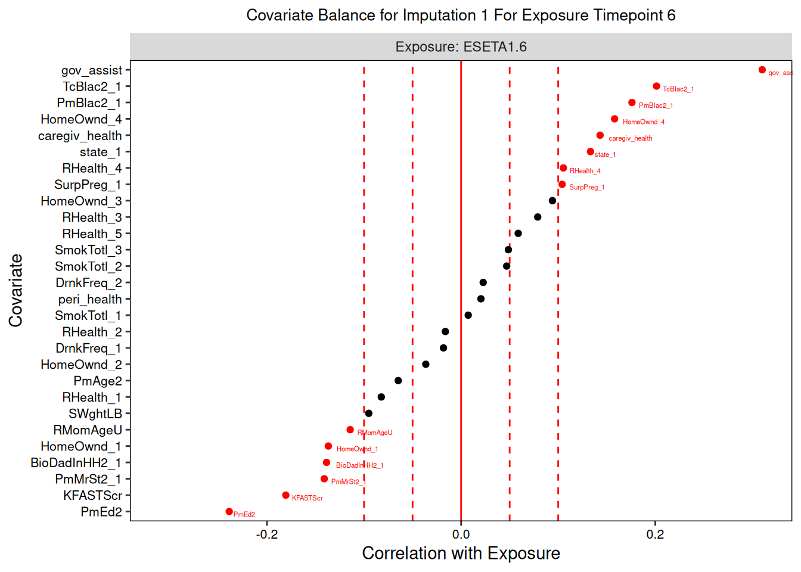

Workflow: Continuous Exposure
Isabella Stallworthy
2023-11-28
Source:vignettes/Workflow_Continuous_Exposure.Rmd
Workflow_Continuous_Exposure.Rmd
# install.packages("devtools")
# library(devtools)
require("devtools")
#> Loading required package: devtools
#> Loading required package: usethis
devtools::install_github("istallworthy/devMSMs", quiet = TRUE)
library(devMSMs)
devtools::install_github("istallworthy/devMSMsHelpers", quiet = TRUE)
library(devMSMsHelpers)This vignette guides a user through the process of using devMSMs to fit marginal structural models (MSMs) with a a continuously distributed exposure variable. The users should first view the Terminology, Data Requirements, Specifying Core Inputs, and Preliminary Steps vignettes.
The following suggested workflow and constituent steps are also reflected in examplePipeline.rmd file. This workflow is designed to complement the conceptual and high-level practical details provided in the manuscript [add link here]. We strongly suggest users familiarize themselves with concepts of the MSM process outlined in the manuscript and the practical steps and functions put forth in the following sections before implementing this workflow.
All devMSMs functions have optional arguments to suppress
saving output locally (save.out = FALSE) and printing it to
the console (verbose = FALSE). The defaults to both
arguments are TRUE, as recommended for use of the package’s full
functionality. Users must supply a path to a home directory
(home_dir) if save.out = TRUE. All sub-folders
referenced by each function are created automatically within the home
directory.
save.out = FALSE
verbose = TRUELoad data
We first load a data frame of complete data. These data are simulated
based on data from the Family Life Project (FLP), a longitudinal study
following 1,292 families representative of two geographic areas (three
counties in North Carolina and three counties in Pennsylvania) with high
rural child poverty (Vernon-Feagans et al., 2013; Burchinal et al.,
2008).
(See
Preliminary
Steps vignette for beginning with other data types, including
missing data).
data("sim_data_wide", package = "devMSMs")
data <- sim_data_wideCore inputs
Please see the Specifying Core Inputs vignette for more detail on the following core inputs.
set.seed(1234)
home_dir <- NA
# home_dir <- '/Users/isabella/Library/CloudStorage/Box-Box/BSL General/MSMs/testing/isa' #note: no / after
exposure <- "ESETA1"
exposure_time_pts <- c(6, 15, 24, 35, 58)
outcome <- "StrDif_Tot.58"
tv_confounders <- c("SAAmylase.6","SAAmylase.15", "SAAmylase.24",
"MDI.6", "MDI.15",
"RHasSO.6", "RHasSO.15", "RHasSO.24","RHasSO.35", "RHasSO.58",
"WndNbrhood.6","WndNbrhood.24", "WndNbrhood.35", "WndNbrhood.58",
"IBRAttn.6", "IBRAttn.15", "IBRAttn.24",
"B18Raw.6", "B18Raw.15", "B18Raw.24", "B18Raw.58",
"HOMEETA1.6", "HOMEETA1.15", "HOMEETA1.24", "HOMEETA1.35", "HOMEETA1.58",
"InRatioCor.6", "InRatioCor.15", "InRatioCor.24", "InRatioCor.35", "InRatioCor.58",
"ESETA1.6", "ESETA1.15", "ESETA1.24", "ESETA1.35", "ESETA1.58",
"CORTB.6", "CORTB.15", "CORTB.24",
"EARS_TJo.24", "EARS_TJo.35",
"LESMnPos.24", "LESMnPos.35",
"LESMnNeg.24", "LESMnNeg.35",
"StrDif_Tot.35", "StrDif_Tot.58",
"fscore.35", "fscore.58"
)
ti_confounders <- c("state", "BioDadInHH2", "PmAge2", "PmBlac2", "TcBlac2", "PmMrSt2", "PmEd2", "KFASTScr",
"RMomAgeU", "RHealth", "HomeOwnd", "SWghtLB", "SurpPreg", "SmokTotl", "DrnkFreq",
"peri_health", "caregiv_health", "gov_assist"
)Phase 1: Confounder Adjustment
The goal of this first phase is to minimize the associations between confounders and exposure using IPTW balancing weights. We strongly advise the user to carefully inspect each balancing formula to ensure weights are created and evaluated appropriately at each step.
Step 1. Create Full Balancing Formulas & Conduct Pre-Balance Checking
Step 1a. Create Full Balancing Formulas & Conduct Pre-Balance Checking
We first create comprehensive, full balancing formulas relating
exposure to confounders at each time point using the
createFormulas() function (type = “full”).
This step creates full formulas containing all measured confounding
variables at each exposure time point, including all time-invariant
confounders, lagged time-varying confounders, as well as past levels of
the exposure and outcome (make sure they are listed as time-varying
confounders). The code automatically excludes time-varying confounders
at the contemporaneous time point given that they cannot be decisively
differentiated from mediators which should not be balanced on (Thoemmes
& Ong, 2016), although this can be modified by the user if they have
strong reason to believe a concurrent variable is not a mediator (see
below).
To include interactions between covariates in the balancing formulas, please list those composed of only time invariant covariates (e.g., “variable:variable” or “variable.t:variable.t”) as time invariant confounders, and those composed of both or only time-varying covariates (e.g., “variable.t:variable” or “variable.t:variable.t”) in the time-varying confounders list. Interactions containing time-varying covariates will be treated as time-varying confounders measured at the highest measurement time point of the constituent time points. Of note, interactions between factor variables with multiple levels can produce a large number of additional variables in the balancing formulas.
The required input to create full balancing formulas using the
createFormulas() function are: exposure (e.g., “variable”),
exposure time points, outcome (e.g., “variable.time”), a list of
time-varying confounders (e.g. “variable.time”), a list of time
invariant confounders (e.g., “variable”), and setting
type = “full”.
Optional inputs to create full balancing formulas using the
createFormulas() function are as follows.
For concur_conf: as a list, provide the names of any
time-varying confounders (e.g., “variable.time”) that you wish to be
included concurrently in the balancing formulas (overriding the default
which is to only include lagged confounders).
We choose not to specify any concurrent confounders, as we cannot reliably distinguish them from mediators.
# concur_conf <- "B18Raw.15"
concur_conf <- NULL The user may also specify a list of custom formulas by specifying to
custom a list of formulas, one for each exposure time point
(e.g., “exposure.time ~ variable.time + variable +…”) in formula format,
with each entry named with the formula type and exposure time point
(e.g., “full_form-6”). An abridged example is shown below. The
createFormulas() function will automatically check custom
formulas to ensure that there is a correctly formatted formula for each
exposure time point with exposure as the dependent variable. However,
the user is responsible for ensuring the custom formulas contain the
appropriate confounders for the formula type they are generating.
We chose not to create custom formulas and use
createFormulas() to make them.
# custom <- list("full_form-6" = as.formula("ESETA1.6 ~ BioDadInHH2 + DrnkFreq + gov_assist"),
# "full_form-15" = as.formula("ESETA1.15 ~ BioDadInHH2 + DrnkFreq + gov_assist")
# )
custom <- NULL The createFormulas function saves out .csv and .rds
files containing balancing formulas at each exposure time point for the
specified type (“full”) in the ‘formulas/full/’ folder.
The function returns a list of formulas labeled by type, exposure, outcome, and exposure time point.
type <- "full"
full_formulas <- createFormulas(exposure = exposure, exposure_time_pts = exposure_time_pts, outcome = outcome, #required
type = type, ti_confounders = ti_confounders, tv_confounders = tv_confounders, #required
concur_conf = concur_conf, custom = custom, #optional
home_dir = home_dir, verbose = verbose, save.out = save.out) #optional
#> USER ALERT: Please manually inspect the full balancing formula below:
#> The full formula for ESETA1 - StrDif_Tot.58 at ESETA1 time point 6 is:
#> ESETA1.6 ~ BioDadInHH2 + caregiv_health + DrnkFreq + gov_assist +
#> HomeOwnd + KFASTScr + peri_health + PmAge2 + PmBlac2 + PmEd2 +
#> PmMrSt2 + RHealth + RMomAgeU + SmokTotl + state + SurpPreg +
#> SWghtLB + TcBlac2
#> <environment: 0x55bc626562f0>
#> USER ALERT: Please manually inspect the full balancing formula below:
#> The full formula for ESETA1 - StrDif_Tot.58 at ESETA1 time point 15 is:
#> ESETA1.15 ~ B18Raw.6 + BioDadInHH2 + caregiv_health + CORTB.6 +
#> DrnkFreq + ESETA1.6 + gov_assist + HOMEETA1.6 + HomeOwnd +
#> IBRAttn.6 + InRatioCor.6 + KFASTScr + MDI.6 + peri_health +
#> PmAge2 + PmBlac2 + PmEd2 + PmMrSt2 + RHasSO.6 + RHealth +
#> RMomAgeU + SAAmylase.6 + SmokTotl + state + SurpPreg + SWghtLB +
#> TcBlac2 + WndNbrhood.6
#> <environment: 0x55bc626562f0>
#> USER ALERT: Please manually inspect the full balancing formula below:
#> The full formula for ESETA1 - StrDif_Tot.58 at ESETA1 time point 24 is:
#> ESETA1.24 ~ B18Raw.15 + B18Raw.6 + BioDadInHH2 + caregiv_health +
#> CORTB.15 + CORTB.6 + DrnkFreq + ESETA1.15 + ESETA1.6 + gov_assist +
#> HOMEETA1.15 + HOMEETA1.6 + HomeOwnd + IBRAttn.15 + IBRAttn.6 +
#> InRatioCor.15 + InRatioCor.6 + KFASTScr + MDI.15 + MDI.6 +
#> peri_health + PmAge2 + PmBlac2 + PmEd2 + PmMrSt2 + RHasSO.15 +
#> RHasSO.6 + RHealth + RMomAgeU + SAAmylase.15 + SAAmylase.6 +
#> SmokTotl + state + SurpPreg + SWghtLB + TcBlac2 + WndNbrhood.6
#> <environment: 0x55bc626562f0>
#> USER ALERT: Please manually inspect the full balancing formula below:
#> The full formula for ESETA1 - StrDif_Tot.58 at ESETA1 time point 35 is:
#> ESETA1.35 ~ B18Raw.15 + B18Raw.24 + B18Raw.6 + BioDadInHH2 +
#> caregiv_health + CORTB.15 + CORTB.24 + CORTB.6 + DrnkFreq +
#> EARS_TJo.24 + ESETA1.15 + ESETA1.24 + ESETA1.6 + gov_assist +
#> HOMEETA1.15 + HOMEETA1.24 + HOMEETA1.6 + HomeOwnd + IBRAttn.15 +
#> IBRAttn.24 + IBRAttn.6 + InRatioCor.15 + InRatioCor.24 +
#> InRatioCor.6 + KFASTScr + LESMnNeg.24 + LESMnPos.24 + MDI.15 +
#> MDI.6 + peri_health + PmAge2 + PmBlac2 + PmEd2 + PmMrSt2 +
#> RHasSO.15 + RHasSO.24 + RHasSO.6 + RHealth + RMomAgeU + SAAmylase.15 +
#> SAAmylase.24 + SAAmylase.6 + SmokTotl + state + SurpPreg +
#> SWghtLB + TcBlac2 + WndNbrhood.24 + WndNbrhood.6
#> <environment: 0x55bc626562f0>
#> USER ALERT: Please manually inspect the full balancing formula below:
#> The full formula for ESETA1 - StrDif_Tot.58 at ESETA1 time point 58 is:
#> ESETA1.58 ~ B18Raw.15 + B18Raw.24 + B18Raw.6 + BioDadInHH2 +
#> caregiv_health + CORTB.15 + CORTB.24 + CORTB.6 + DrnkFreq +
#> EARS_TJo.24 + EARS_TJo.35 + ESETA1.15 + ESETA1.24 + ESETA1.35 +
#> ESETA1.6 + fscore.35 + gov_assist + HOMEETA1.15 + HOMEETA1.24 +
#> HOMEETA1.35 + HOMEETA1.6 + HomeOwnd + IBRAttn.15 + IBRAttn.24 +
#> IBRAttn.6 + InRatioCor.15 + InRatioCor.24 + InRatioCor.35 +
#> InRatioCor.6 + KFASTScr + LESMnNeg.24 + LESMnNeg.35 + LESMnPos.24 +
#> LESMnPos.35 + MDI.15 + MDI.6 + peri_health + PmAge2 + PmBlac2 +
#> PmEd2 + PmMrSt2 + RHasSO.15 + RHasSO.24 + RHasSO.35 + RHasSO.6 +
#> RHealth + RMomAgeU + SAAmylase.15 + SAAmylase.24 + SAAmylase.6 +
#> SmokTotl + state + StrDif_Tot.35 + SurpPreg + SWghtLB + TcBlac2 +
#> WndNbrhood.24 + WndNbrhood.35 + WndNbrhood.6
#> <environment: 0x55bc626562f0>As shown above, createFormulas() creates a balancing
formula for each exposure time point. Each full formula contains all
time invariant confounders as well as all lagged time-varying
confounders at each time point. We inspect each of these formulas to
ensure that they are accurate for creating IPTW balancing weights.
Step 1b. Conduct Exploratory Pre-Balance Assessment
The next step examines the initial imbalance, or how strongly
exposure relates to each confounder at each time point, for all measured
confounders prior to weighting using the assessBalance()
function (type = “prebalance”). This function draws on the
calcBalStats() function (see the Assessing Balance for
Time-Varying Exposure section in the accompanying manuscript).
The assessBalance() function outputs balance statistics
(correlations for continuous exposures and standardized mean differences
for binary exposures) relating exposure at each time point to
confounders in a table as well as in plots. This function also provides
summary balance statistics averaging across all time points (and imputed
datasets if they are supplied).
The required inputs for using the assessBalance()
function to conduct pre-balance testing are: complete data (data frame,
a mids object, or a list of imputed datasets as dataframes in wide
format), exposure (e.g., “variable”), exposure time points, outcome
(e.g., “variable.time”), the full formulas (see Step 1a), and setting
type = “prebalance”.
The optional inputs are as follows.
The user may specify balance_thresh, or a threshold(s)
for determining confounder balance, in one of two ways. First, they can
provide a single number value (0-1) for the absolute value of the
standardized balance statistic (either the correlation for continuous
exposures or standardized group mean difference for binary exposures)
for exposure and confounders below which confounders are considered
balanced and above which they are considered imbalanced (default is 0.1;
Stuart, 2010). Second, users may make an a priori assertion that some
confounders are more important than others based on theory and existing
research. In this case, they can provide two numbers that represent the
balance thresholds for important and less important confounders,
respectively. If the user supplies two balance thresholds are provided,
they must also supply a list of important confounders (time-varying:
“variable.t”, time invariant: “variable”) to the imp_conf
field. The balance threshold specification should be kept consistent
throughout the use of this workflow.
As recommended, below we provide two balancing thresholds and identify income and parent education as important confounders in the relation between economic strain and behavior problems.
balance_thresh <- c(0.05, 0.1)
imp_conf <- c("InRatioCor.6", "InRatioCor.15", "InRatioCor.24", "InRatioCor.35", "InRatioCor.58", "PmEd2") The assessBalance() function saves out the following
.csv and .html files into the ‘balance/prebalance/’ folder: tables of
balance statistics for all confounders, tables of balance statistics for
covariates that are imbalanced (with respect to their respective balance
thresholds), and an overall balance summary table (averaged across any
imputed datasets). Within the ‘balance/prebalance/plots/’ folder, the
function outputs .jpeg files of summary love plots depicting confounder
balance for each exposure time point.
The function returns a data frame (or list) of balance statistics, balance thresholds, and binary balanced tag for each confounder relevant to each exposure time point.
type <- "prebalance"
formulas <- full_formulas
prebalance_stats <- assessBalance(data = data, exposure = exposure, exposure_time_pts = exposure_time_pts,
outcome = outcome, type = type, formulas = formulas, #required
balance_thresh = balance_thresh, imp_conf = imp_conf, #optional
home_dir = home_dir, verbose = verbose, save.out = save.out) #optional
#> USER ALERT: The following statistics display covariate imbalance at each exposure time point prior to weighting, using full formulas.


#> As shown below, 55 out of 191 (29%) covariates across time points, corresponding to 18 out of 33 domains, remain imbalanced with a remaining median absolute value correlation/std mean difference of 0.13 (range= -0.24-0.32):
#>
#> Table: Imbalanced covariates using no weights and full formulas
#>
#> | exp_time| balanced_n| imbalanced_n| n|
#> |--------:|----------:|------------:|--:|
#> | 6| 7| 11| 18|
#> | 15| 16| 12| 28|
#> | 24| 28| 9| 37|
#> | 35| 38| 11| 49|
#> | 58| 47| 12| 59|
#>
#>
#> USER ALERT: For exposure ESETA1 using the full formulas and no weights :
#> The median absolute value relation between exposure and confounder is 0.06 (range = -0.24 -0.32).
#> As shown below, the following 55 covariates across time points out of 191 total (28.8%) spanning 18 domains out of 33 (54.55%) are imbalanced with a remaining median absolute value correlation/std mean difference in relation to ESETA1 of 0.13 (range=-0.24-0.32) :
#>
#>
#> Table: Imbalanced Covariates
#>
#> | |exposure | exp_time| covar_time|covariate | avg_bal| bal_thresh| balanced|
#> |:---|:--------|--------:|----------:|:--------------|----------:|----------:|--------:|
#> |1 |ESETA1 | 6| 0|caregiv_health | 0.1750682| 0.10| 0|
#> |2 |ESETA1 | 6| 0|gov_assist | 0.3162628| 0.10| 0|
#> |3 |ESETA1 | 6| 0|KFASTScr | -0.1741547| 0.10| 0|
#> |6 |ESETA1 | 6| 0|PmEd2 | -0.2440498| 0.05| 0|
#> |7 |ESETA1 | 6| 0|RMomAgeU | -0.1308954| 0.10| 0|
#> |9 |ESETA1 | 6| 0|BioDadInHH2 | -0.1245621| 0.10| 0|
#> |12 |ESETA1 | 6| 0|PmBlac2 | 0.1802582| 0.10| 0|
#> |13 |ESETA1 | 6| 0|PmMrSt2 | -0.1017754| 0.10| 0|
#> |16 |ESETA1 | 6| 0|state | 0.1448002| 0.10| 0|
#> |17 |ESETA1 | 6| 0|SurpPreg | 0.1045888| 0.10| 0|
#> |18 |ESETA1 | 6| 0|TcBlac2 | 0.2058312| 0.10| 0|
#> |19 |ESETA1 | 15| 6|B18Raw.6 | 0.1439834| 0.10| 0|
#> |20 |ESETA1 | 15| 0|caregiv_health | 0.1104491| 0.10| 0|
#> |22 |ESETA1 | 15| 6|ESETA1.6 | 0.1860003| 0.10| 0|
#> |23 |ESETA1 | 15| 0|gov_assist | 0.1581273| 0.10| 0|
#> |24 |ESETA1 | 15| 6|HOMEETA1.6 | -0.1583774| 0.10| 0|
#> |26 |ESETA1 | 15| 6|InRatioCor.6 | -0.2275248| 0.05| 0|
#> |31 |ESETA1 | 15| 0|PmEd2 | -0.1311598| 0.05| 0|
#> |35 |ESETA1 | 15| 6|WndNbrhood.6 | -0.1109797| 0.10| 0|
#> |36 |ESETA1 | 15| 0|BioDadInHH2 | -0.1020164| 0.10| 0|
#> |39 |ESETA1 | 15| 0|PmBlac2 | 0.1344400| 0.10| 0|
#> |44 |ESETA1 | 15| 0|state | 0.1006198| 0.10| 0|
#> |46 |ESETA1 | 15| 0|TcBlac2 | 0.1327607| 0.10| 0|
#> |47 |ESETA1 | 24| 15|B18Raw.15 | 0.1421575| 0.10| 0|
#> |48 |ESETA1 | 24| 6|B18Raw.6 | 0.1557763| 0.10| 0|
#> |52 |ESETA1 | 24| 15|ESETA1.15 | 0.1655498| 0.10| 0|
#> |53 |ESETA1 | 24| 6|ESETA1.6 | 0.1403452| 0.10| 0|
#> |54 |ESETA1 | 24| 0|gov_assist | 0.1547692| 0.10| 0|
#> |55 |ESETA1 | 24| 15|HOMEETA1.15 | -0.1085277| 0.10| 0|
#> |59 |ESETA1 | 24| 15|InRatioCor.15 | -0.1195160| 0.05| 0|
#> |60 |ESETA1 | 24| 6|InRatioCor.6 | -0.1351805| 0.05| 0|
#> |66 |ESETA1 | 24| 0|PmEd2 | -0.0903395| 0.05| 0|
#> |84 |ESETA1 | 35| 15|B18Raw.15 | 0.1170191| 0.10| 0|
#> |92 |ESETA1 | 35| 15|ESETA1.15 | 0.1513316| 0.10| 0|
#> |93 |ESETA1 | 35| 24|ESETA1.24 | 0.1342892| 0.10| 0|
#> |94 |ESETA1 | 35| 6|ESETA1.6 | 0.1168198| 0.10| 0|
#> |95 |ESETA1 | 35| 0|gov_assist | 0.1260387| 0.10| 0|
#> |97 |ESETA1 | 35| 24|HOMEETA1.24 | -0.1089467| 0.10| 0|
#> |102 |ESETA1 | 35| 15|InRatioCor.15 | -0.1218204| 0.05| 0|
#> |103 |ESETA1 | 35| 24|InRatioCor.24 | -0.1488017| 0.05| 0|
#> |104 |ESETA1 | 35| 6|InRatioCor.6 | -0.1428961| 0.05| 0|
#> |112 |ESETA1 | 35| 0|PmEd2 | -0.1065020| 0.05| 0|
#> |127 |ESETA1 | 35| 6|RHasSO.6 | 0.1215992| 0.10| 0|
#> |133 |ESETA1 | 58| 15|B18Raw.15 | 0.1032047| 0.10| 0|
#> |144 |ESETA1 | 58| 35|ESETA1.35 | 0.1203630| 0.10| 0|
#> |146 |ESETA1 | 58| 35|fscore.35 | -0.1074297| 0.10| 0|
#> |147 |ESETA1 | 58| 0|gov_assist | 0.1254127| 0.10| 0|
#> |150 |ESETA1 | 58| 35|HOMEETA1.35 | -0.1017226| 0.10| 0|
#> |151 |ESETA1 | 58| 6|HOMEETA1.6 | -0.1287940| 0.10| 0|
#> |155 |ESETA1 | 58| 15|InRatioCor.15 | -0.1439390| 0.05| 0|
#> |156 |ESETA1 | 58| 24|InRatioCor.24 | -0.1611115| 0.05| 0|
#> |157 |ESETA1 | 58| 35|InRatioCor.35 | -0.1323394| 0.05| 0|
#> |158 |ESETA1 | 58| 6|InRatioCor.6 | -0.1575428| 0.05| 0|
#> |168 |ESETA1 | 58| 0|PmEd2 | -0.1407238| 0.05| 0|
#> |191 |ESETA1 | 58| 0|TcBlac2 | 0.1000105| 0.10| 0|The output above shows the initial imbalance between confounders and exposure in tables and plots. 55 confounders are imbalanced (labeled in red font in the love plots) with respect to the economic strain exposure and their respective balance threshold. The love plots depict the standardized associations between confounder and exposure at each exposure time point, with the vertical red dashed lines indicating balance thresholds.
.
Step 2. Create Simplified Balancing Formulas & Determine Optimal Weighting Method
The goal of this second step is to create shortened, more parsimonious balancing formulas for determining the optimal IPTW weighting method that most successfully reduces imbalance.
2a. Create Simplified Balancing Formulas
First, we create shorter, more parsimonious balancing formulas
relating exposure to confounders at each time point using the
createFormulas() function (type = ”short”).
For each exposure time point, these formulas contain all time invariant
confounders as well as time-varying confounders only at the t-1
lag. The logic here is that balancing on confounders at the most recent
prior time point (t-1 only) may achieve balance on levels at
more distal time points, given the stability of many confounders over
time. Importantly, we will empirically assess and relax this assumption
if needed at subsequent steps (Steps 3a-b).
See Step 1a for instructions on how to include confounder interactions.
The required input to create shortened balancing formulas using the
createFormulas() function are: exposure (e.g., “variable”),
exposure time points, outcome (e.g., “variable.time”), a list of
time-varying confounders (e.g., “variable.time”), a list of time
invariant confounders, and setting type = “short”.
In addition to the optional input outlined in Step 1a, the user also
has the option to specify in keep_conf, a list of any
time-varying confounders (e.g., “variable.t”) to always retain as lagged
confounders in these shortened formulas. The user may use this argument
to retain specific time-varying confounders that would otherwise be
excluded at this step if they occur at lags greater than t-1
for each formula.
Below, we choose not to specify any confounders to always retain at this step.
keep_conf <- "InRatioCor.6"
keep_conf <- NULL The createFormulas() function saves out .csv and .rds
files containing balancing formulas at each exposure time point (e.g.,
see below) for the specified type (in this case, “short”) in the
‘formulas/short/’ folder.
The function returns a list of balancing formulas labeled by type, exposure, outcome, and exposure time point.
type <- "short"
short_formulas <- createFormulas(exposure = exposure, exposure_time_pts = exposure_time_pts,
outcome = outcome, type = type, ti_confounders = ti_confounders,
tv_confounders = tv_confounders, concur_conf = concur_conf,
keep_conf = keep_conf, custom = custom,
home_dir = home_dir, verbose = verbose, save.out = save.out)
#> USER ALERT: Please manually inspect the short balancing formula below that includes time-varying confounders at t-1 only:
#> The short formula for ESETA1 - StrDif_Tot.58 at ESETA1 time point 6 is:
#> ESETA1.6 ~ BioDadInHH2 + caregiv_health + DrnkFreq + gov_assist +
#> HomeOwnd + KFASTScr + peri_health + PmAge2 + PmBlac2 + PmEd2 +
#> PmMrSt2 + RHealth + RMomAgeU + SmokTotl + state + SurpPreg +
#> SWghtLB + TcBlac2
#> <environment: 0x55bc6015f9e8>
#> USER ALERT: Please manually inspect the short balancing formula below that includes time-varying confounders at t-1 only:
#> The short formula for ESETA1 - StrDif_Tot.58 at ESETA1 time point 15 is:
#> ESETA1.15 ~ B18Raw.6 + BioDadInHH2 + caregiv_health + CORTB.6 +
#> DrnkFreq + ESETA1.6 + gov_assist + HOMEETA1.6 + HomeOwnd +
#> IBRAttn.6 + InRatioCor.6 + KFASTScr + MDI.6 + peri_health +
#> PmAge2 + PmBlac2 + PmEd2 + PmMrSt2 + RHasSO.6 + RHealth +
#> RMomAgeU + SAAmylase.6 + SmokTotl + state + SurpPreg + SWghtLB +
#> TcBlac2 + WndNbrhood.6
#> <environment: 0x55bc6015f9e8>
#> USER ALERT: Please manually inspect the short balancing formula below that includes time-varying confounders at t-1 only:
#> The short formula for ESETA1 - StrDif_Tot.58 at ESETA1 time point 24 is:
#> ESETA1.24 ~ B18Raw.15 + BioDadInHH2 + caregiv_health + CORTB.15 +
#> DrnkFreq + ESETA1.15 + gov_assist + HOMEETA1.15 + HomeOwnd +
#> IBRAttn.15 + InRatioCor.15 + KFASTScr + MDI.15 + peri_health +
#> PmAge2 + PmBlac2 + PmEd2 + PmMrSt2 + RHasSO.15 + RHealth +
#> RMomAgeU + SAAmylase.15 + SmokTotl + state + SurpPreg + SWghtLB +
#> TcBlac2
#> <environment: 0x55bc6015f9e8>
#> USER ALERT: Please manually inspect the short balancing formula below that includes time-varying confounders at t-1 only:
#> The short formula for ESETA1 - StrDif_Tot.58 at ESETA1 time point 35 is:
#> ESETA1.35 ~ B18Raw.24 + BioDadInHH2 + caregiv_health + CORTB.24 +
#> DrnkFreq + EARS_TJo.24 + ESETA1.24 + gov_assist + HOMEETA1.24 +
#> HomeOwnd + IBRAttn.24 + InRatioCor.24 + KFASTScr + LESMnNeg.24 +
#> LESMnPos.24 + peri_health + PmAge2 + PmBlac2 + PmEd2 + PmMrSt2 +
#> RHasSO.24 + RHealth + RMomAgeU + SAAmylase.24 + SmokTotl +
#> state + SurpPreg + SWghtLB + TcBlac2 + WndNbrhood.24
#> <environment: 0x55bc6015f9e8>
#> USER ALERT: Please manually inspect the short balancing formula below that includes time-varying confounders at t-1 only:
#> The short formula for ESETA1 - StrDif_Tot.58 at ESETA1 time point 58 is:
#> ESETA1.58 ~ BioDadInHH2 + caregiv_health + DrnkFreq + EARS_TJo.35 +
#> ESETA1.35 + fscore.35 + gov_assist + HOMEETA1.35 + HomeOwnd +
#> InRatioCor.35 + KFASTScr + LESMnNeg.35 + LESMnPos.35 + peri_health +
#> PmAge2 + PmBlac2 + PmEd2 + PmMrSt2 + RHasSO.35 + RHealth +
#> RMomAgeU + SmokTotl + state + StrDif_Tot.35 + SurpPreg +
#> SWghtLB + TcBlac2 + WndNbrhood.35
#> <environment: 0x55bc6015f9e8>Above, we inspect the shortened balancing formula at each exposure time point. These formulas are considerably shorter than the full formulas. For instance, at the 58-month exposure time point, the formula contains all time invariant confounders and only time-varying confounders at the 35-month time point.
2b. Create IPTW Balancing Weights using Multiple Weighting Methods
Having created shorter, simplified balancing formulas, we now create
the first round of IPTW balancing weights (Thoemmes & Ong, 2016)
using the createWeights() function, the shortened balancing
formulas, and all available weighting methods. The function calls the
weightitMSM() function from the WeightIt package
(Greifer, 2023) that uses the time-specific formulas to create weights
at each time point before automatically multiplying them together to
create one weight per person. Weights are stabilized, as recommended
(Cole & Hernan, 2008; Thoemmes & Ong, 2016), and distributions
are saved for inspection.
The required inputs for using the createWeights()
function to create the initial around of IPTW balancing weights are:
complete data (data frame, mids object, or a list of imputed datasets as
dataframes in wide format), exposure (e.g., “variable”), outcome (e.g.,
“variable.time”), and the short formulas (see Step 2a).
formulas <- short_formulasThe optional inputs are as follows.
For method, provide one of the following methods for
calculating balancing weights using weightitMSM() from the
methods that have been validated for longitudinal exposures: “cbps”
(Covariate Balancing Propensity Score weighting; default), “gbm”
(generalized boosted model), “glm” (generalized linear model), or
“super” (SuperLearner via the SuperLearner package; Polley et
al., 2013). More information can be found in the
WeightIt
documentation.
method <- "cbps"The createWeights() function can also take any number of
additional arguments that will be passed to the
weightitMSM () function (e.g., ‘criterion’, distribution’,
‘SL.library’). If the user selects the SuperLearner (“super”) method,
the default super learner library (‘SL.library’) is xx but an
alternative library can be entered as an input to the
createWeights function. For binary exposures, the “cbps”
method allows you to specify estimand as either ATE, ATT,
or ATC. With “glm”, “super”, and “bart” you can specify ATE, ATT, ATC,
ATO, ATM, or ATOS. With “gbm”, you can specify ATE, ATT, ATC, ATO, or
ATM. The default estimand for binary exposures is ATE. We advise the
interested user to review the
WeightIt
documentation for more information about the additional optional
arguments available for each of the weighting methods.
The user can also specify read_in_from_file = TRUEif the
user has previously created weights for these specific data, formula,
and weight type using this function and wishes to read them in from a
local file instead of recreating them. The createWeights()
function automatically conducts some basic checks that the saved weights
match the data type, weights method, and number of formulas provided.
The user is responsible for making sure these weights were created
appropriately.
The createWeights() function saves out an .rds file of
the weights in the ‘weights’ folder, a histogram of the weights
distribution in the ‘weights/histograms/’ folder, and a .csv file of
data with the weights appended in the ‘weights/values/’ folder.
The function returns a list of weights objects each in the form of WeightItMSM output in a single nested list (labeled “0” if data are in data frame format) or with nested lists for each imputed dataset (if data are imputed).
Below, we create IPTW weights using the default “CBPS” method.
weights.cbps <- createWeights(data = data, exposure = exposure, outcome = outcome, formulas = formulas, #required
method = method, read_in_from_file = FALSE, #optional
home_dir = home_dir, verbose = verbose, save.out = save.out) #optional
#> For the cbps weighting method, the median weight value is 1.21 (SD = 3.68; range = 0-60).
As shown above, the distribution has a heavy right tail (typical of real-world data), and a median value of 1.21. The right tail of the distribution represents individuals who experienced statistically unexpected levels of exposure given their levels of confounders.
We then create IPTW balancing weights using all other available methods.
method <- "glm"
weights.glm <- createWeights(data = data, exposure = exposure, outcome = outcome, formulas = formulas, #required
method = method, read_in_from_file = FALSE, #optional
home_dir = home_dir, verbose = verbose, save.out = save.out) #optional
#> For the glm weighting method, the median weight value is 0.9 (SD = 1.73; range = 0.03-26).
As shown above, the “glm” method produces a similar distribution of weights.
method <- "gbm"
weights.gbm <- createWeights(data = data, exposure = exposure, outcome = outcome, formulas = formulas, #required
method = method, read_in_from_file = FALSE, #optional
home_dir = home_dir, verbose = verbose, save.out = save.out) #optional
#> For the gbm weighting method, the median weight value is 0.48 (SD = 1.02; range = 0-17).
method <- "bart"
weights.bart <- createWeights(data = data, exposure = exposure, outcome = outcome, formulas = formulas, #required
method = method, read_in_from_file = FALSE, #optional
home_dir = home_dir, verbose = verbose, save.out = save.out) #optional
#> For the bart weighting method, the median weight value is 0.72 (SD = 1.43; range = 0.03-22).
method <- "super"
weights.super <- createWeights(data = data, exposure = exposure, outcome = outcome, formulas = formulas, #required
method = method, read_in_from_file = FALSE, #optional
home_dir = home_dir, verbose = verbose, save.out = save.out) #optional
#> Loading required package: nnls
#> For the super weighting method, the median weight value is 0.99 (SD = 2.21; range = 0.03-40).
2c. Assess All Weighting Methods to Determine Optimal Method
Next, we evaluate how well the weights created using each of the
different weighting methods reduced imbalance for the confounders that
we provided in the short balancing formula, using the
assessBalance() function (type = “weighted”).
This function calls the calcBalStats() function using the
short formulas and specifies that the balance statistics should be
calculated using the IPTW weights supplied.
The assessBalance() function outputs balance statistics
(correlations for continuous exposures and standardized mean differences
for binary exposures) relating exposure at each time point to
confounders in a table as well as in plots. This function also provides
summary balance statistics averaging across all time points (and imputed
datasets if they are supplied).
The required inputs for using the assessBalance()
function to assess balance for the first round of IPTW weights are:
complete data (data frame, mids object, or a list of imputed datasets as
dataframes in wide format), exposure (e.g., “variable”), exposure time
points, outcome (e.g., “variable.time”), providing the short formulas
(see Step 2a), setting type = “weighted”, and providing the
weights that were just created.
The optional inputs are described in Step 1b.
The assessBalance() function saves out the following
.csv and .html files into the ‘balance/weighted/’ folder: tables of
balance statistics for all confounders, tables of balance statistics for
covariates that are imbalanced, and an overall balance summary table
(averaged across any imputed datasets). Within the
‘balance/weighted/plots/’ folder, the function outputs .jpeg files of
summary love plots depicting confounder balance for each exposure time
point.
The function returns a data frame (or list) of balance statistics,
balance thresholds, and binary balanced tag (1 = balanced, 0 =
imbalanced) for each confounder relevant to each exposure time
point.
We first assess balance for the “CBPS” weighting method.
type <- "weighted"
formulas <- short_formulas
weights <- weights.cbps
balance_stats.cbps <- assessBalance(data = data, exposure = exposure, exposure_time_pts = exposure_time_pts, #required
outcome = outcome, type = type, formulas = formulas, weights = weights, #required
balance_thresh = balance_thresh, imp_conf = imp_conf, #optional
home_dir = home_dir, verbose = verbose, save.out = save.out) #optional
#> USER ALERT: The following statistics display covariate imbalance at each exposure time point following IPTW weighting, using short formulas.


#> As shown below, 5 out of 131 (4%) covariates across time points, corresponding to 5 out of 32 domains, remain imbalanced with a remaining median absolute value correlation/std mean difference of 0.1 (range= -0.1-0.14):
#>
#> Table: Imbalanced covariates using cbps and short formulas
#>
#> | exp_time| balanced_n| imbalanced_n| n|
#> |--------:|----------:|------------:|--:|
#> | 6| 17| 1| 18|
#> | 15| 27| 1| 28|
#> | 24| 27| 0| 27|
#> | 35| 28| 2| 30|
#> | 58| 27| 1| 28|
#>
#>
#> USER ALERT: For exposure ESETA1 using the short formulas and cbps :
#> The median absolute value relation between exposure and confounder is 0.03 (range = -0.1 -0.14).
#> As shown below, the following 5 covariates across time points out of 131 total (3.82%) spanning 5 domains out of 33 (15.15%) are imbalanced with a remaining median absolute value correlation/std mean difference in relation to ESETA1 of 0.1 (range=-0.1-0.14) :
#>
#>
#> Table: Imbalanced Covariates
#>
#> | |exposure | exp_time| covar_time|covariate | avg_bal| bal_thresh| balanced|
#> |:---|:--------|--------:|----------:|:-------------|----------:|----------:|--------:|
#> |8 |ESETA1 | 6| 0|SWghtLB | -0.1039386| 0.10| 0|
#> |22 |ESETA1 | 15| 6|ESETA1.6 | 0.1272972| 0.10| 0|
#> |82 |ESETA1 | 35| 24|InRatioCor.24 | -0.0729568| 0.05| 0|
#> |88 |ESETA1 | 35| 0|PmEd2 | -0.0686910| 0.05| 0|
#> |120 |ESETA1 | 58| 35|WndNbrhood.35 | 0.1433257| 0.10| 0|As shown above, for the “CBPS” weighting method and short formulas, the median absolute value correlation between confounder and exposure is 0.03 and only 8 confounders remain imbalanced.
weights <- weights.glm
balance_stats.glm <- assessBalance(data = data, exposure = exposure, exposure_time_pts = exposure_time_pts, #required
outcome = outcome, type = type, formulas = formulas, weights = weights, #required
balance_thresh = balance_thresh, imp_conf = imp_conf, #optional
home_dir = home_dir, verbose = verbose, save.out = save.out) #optional
#> USER ALERT: The following statistics display covariate imbalance at each exposure time point following IPTW weighting, using short formulas.


#> As shown below, 6 out of 131 (5%) covariates across time points, corresponding to 3 out of 32 domains, remain imbalanced with a remaining median absolute value correlation/std mean difference of 0.1 (range= -0.07-0.21):
#>
#> Table: Imbalanced covariates using glm and short formulas
#>
#> | exp_time| balanced_n| imbalanced_n| n|
#> |--------:|----------:|------------:|--:|
#> | 6| 18| 0| 18|
#> | 15| 25| 3| 28|
#> | 24| 26| 1| 27|
#> | 35| 28| 2| 30|
#> | 58| 28| 0| 28|
#>
#>
#> USER ALERT: For exposure ESETA1 using the short formulas and glm :
#> The median absolute value relation between exposure and confounder is 0.02 (range = -0.07 -0.21).
#> As shown below, the following 6 covariates across time points out of 131 total (4.58%) spanning 3 domains out of 33 (9.09%) are imbalanced with a remaining median absolute value correlation/std mean difference in relation to ESETA1 of 0.1 (range=-0.07-0.21) :
#>
#>
#> Table: Imbalanced Covariates
#>
#> | |exposure | exp_time| covar_time|covariate | avg_bal| bal_thresh| balanced|
#> |:--|:--------|--------:|----------:|:-------------|----------:|----------:|--------:|
#> |19 |ESETA1 | 15| 6|B18Raw.6 | 0.1072812| 0.10| 0|
#> |22 |ESETA1 | 15| 6|ESETA1.6 | 0.2062601| 0.10| 0|
#> |26 |ESETA1 | 15| 6|InRatioCor.6 | -0.0620487| 0.05| 0|
#> |50 |ESETA1 | 24| 15|ESETA1.15 | 0.1621505| 0.10| 0|
#> |78 |ESETA1 | 35| 24|ESETA1.24 | 0.1025166| 0.10| 0|
#> |82 |ESETA1 | 35| 24|InRatioCor.24 | -0.0689534| 0.05| 0|For the GLM weighting method, the median absolute value correlation between exposure and confounders is 0.02, with only 6 confounders remaining imbalanced.
weights <- weights.gbm
balance_stats.gbm <- assessBalance(data = data, exposure = exposure, exposure_time_pts = exposure_time_pts, #required
outcome = outcome, type = type, formulas = formulas, weights = weights, #required
balance_thresh = balance_thresh, imp_conf = imp_conf, #optional
home_dir = home_dir, verbose = verbose, save.out = save.out) #optional
#> USER ALERT: The following statistics display covariate imbalance at each exposure time point following IPTW weighting, using short formulas.


#> As shown below, 5 out of 131 (4%) covariates across time points, corresponding to 4 out of 32 domains, remain imbalanced with a remaining median absolute value correlation/std mean difference of 0.1 (range= -0.1-0.19):
#>
#> Table: Imbalanced covariates using gbm and short formulas
#>
#> | exp_time| balanced_n| imbalanced_n| n|
#> |--------:|----------:|------------:|--:|
#> | 6| 18| 0| 18|
#> | 15| 27| 1| 28|
#> | 24| 23| 4| 27|
#> | 35| 30| 0| 30|
#> | 58| 28| 0| 28|
#>
#>
#> USER ALERT: For exposure ESETA1 using the short formulas and gbm :
#> The median absolute value relation between exposure and confounder is 0.02 (range = -0.1 -0.19).
#> As shown below, the following 5 covariates across time points out of 131 total (3.82%) spanning 4 domains out of 33 (12.12%) are imbalanced with a remaining median absolute value correlation/std mean difference in relation to ESETA1 of 0.1 (range=-0.1-0.19) :
#>
#>
#> Table: Imbalanced Covariates
#>
#> | |exposure | exp_time| covar_time|covariate | avg_bal| bal_thresh| balanced|
#> |:--|:--------|--------:|----------:|:-------------|----------:|----------:|--------:|
#> |22 |ESETA1 | 15| 6|ESETA1.6 | 0.1898210| 0.10| 0|
#> |50 |ESETA1 | 24| 15|ESETA1.15 | 0.1510709| 0.10| 0|
#> |52 |ESETA1 | 24| 15|HOMEETA1.15 | -0.1037627| 0.10| 0|
#> |54 |ESETA1 | 24| 15|InRatioCor.15 | -0.0891084| 0.05| 0|
#> |59 |ESETA1 | 24| 0|PmEd2 | -0.0530682| 0.05| 0|For the GBM weighting method, the absolute median correlation between exposure and confounders is 0.02, with 9 confounders remaining imbalanced.
weights <- weights.bart
balance_stats.bart <- assessBalance(data = data, exposure = exposure, exposure_time_pts = exposure_time_pts, #required
outcome = outcome, type = type, formulas = formulas, weights = weights, #required
balance_thresh = balance_thresh, imp_conf = imp_conf, #optional
home_dir = home_dir, verbose = verbose, save.out = save.out) #optional
#> USER ALERT: The following statistics display covariate imbalance at each exposure time point following IPTW weighting, using short formulas.


#> As shown below, 11 out of 131 (8%) covariates across time points, corresponding to 4 out of 32 domains, remain imbalanced with a remaining median absolute value correlation/std mean difference of 0.11 (range= -0.13-0.22):
#>
#> Table: Imbalanced covariates using bart and short formulas
#>
#> | exp_time| balanced_n| imbalanced_n| n|
#> |--------:|----------:|------------:|--:|
#> | 6| 17| 1| 18|
#> | 15| 25| 3| 28|
#> | 24| 24| 3| 27|
#> | 35| 28| 2| 30|
#> | 58| 26| 2| 28|
#>
#>
#> USER ALERT: For exposure ESETA1 using the short formulas and bart :
#> The median absolute value relation between exposure and confounder is 0.02 (range = -0.13 -0.22).
#> As shown below, the following 11 covariates across time points out of 131 total (8.4%) spanning 4 domains out of 33 (12.12%) are imbalanced with a remaining median absolute value correlation/std mean difference in relation to ESETA1 of 0.11 (range=-0.13-0.22) :
#>
#>
#> Table: Imbalanced Covariates
#>
#> | |exposure | exp_time| covar_time|covariate | avg_bal| bal_thresh| balanced|
#> |:---|:--------|--------:|----------:|:-------------|----------:|----------:|--------:|
#> |6 |ESETA1 | 6| 0|PmEd2 | -0.0571224| 0.05| 0|
#> |19 |ESETA1 | 15| 6|B18Raw.6 | 0.1184443| 0.10| 0|
#> |22 |ESETA1 | 15| 6|ESETA1.6 | 0.2203984| 0.10| 0|
#> |26 |ESETA1 | 15| 6|InRatioCor.6 | -0.0926828| 0.05| 0|
#> |47 |ESETA1 | 24| 15|B18Raw.15 | 0.1033890| 0.10| 0|
#> |50 |ESETA1 | 24| 15|ESETA1.15 | 0.1807375| 0.10| 0|
#> |54 |ESETA1 | 24| 15|InRatioCor.15 | -0.1323521| 0.05| 0|
#> |78 |ESETA1 | 35| 24|ESETA1.24 | 0.1184054| 0.10| 0|
#> |82 |ESETA1 | 35| 24|InRatioCor.24 | -0.0677261| 0.05| 0|
#> |106 |ESETA1 | 58| 35|ESETA1.35 | 0.1097024| 0.10| 0|
#> |116 |ESETA1 | 58| 0|PmEd2 | -0.0528347| 0.05| 0|For the BART weighting method, the median absolute value correlation between exposure and confounder is 0.02, with 11 confounders remaining imbalanced.
weights <- weights.super
balance_stats.super <- assessBalance(data = data, exposure = exposure, exposure_time_pts = exposure_time_pts, #required
outcome = outcome, type = type, formulas = formulas, weights = weights, #required
balance_thresh = balance_thresh, imp_conf = imp_conf, #optional
home_dir = home_dir, verbose = verbose, save.out = save.out) #optional
#> USER ALERT: The following statistics display covariate imbalance at each exposure time point following IPTW weighting, using short formulas.


#> As shown below, 5 out of 131 (4%) covariates across time points, corresponding to 3 out of 32 domains, remain imbalanced with a remaining median absolute value correlation/std mean difference of 0.11 (range= -0.07-0.23):
#>
#> Table: Imbalanced covariates using super and short formulas
#>
#> | exp_time| balanced_n| imbalanced_n| n|
#> |--------:|----------:|------------:|--:|
#> | 6| 18| 0| 18|
#> | 15| 25| 3| 28|
#> | 24| 26| 1| 27|
#> | 35| 29| 1| 30|
#> | 58| 28| 0| 28|
#>
#>
#> USER ALERT: For exposure ESETA1 using the short formulas and super :
#> The median absolute value relation between exposure and confounder is 0.02 (range = -0.08 -0.23).
#> As shown below, the following 5 covariates across time points out of 131 total (3.82%) spanning 3 domains out of 33 (9.09%) are imbalanced with a remaining median absolute value correlation/std mean difference in relation to ESETA1 of 0.11 (range=-0.07-0.23) :
#>
#>
#> Table: Imbalanced Covariates
#>
#> | |exposure | exp_time| covar_time|covariate | avg_bal| bal_thresh| balanced|
#> |:--|:--------|--------:|----------:|:------------|----------:|----------:|--------:|
#> |19 |ESETA1 | 15| 6|B18Raw.6 | 0.1007296| 0.10| 0|
#> |22 |ESETA1 | 15| 6|ESETA1.6 | 0.2280065| 0.10| 0|
#> |26 |ESETA1 | 15| 6|InRatioCor.6 | -0.0674695| 0.05| 0|
#> |50 |ESETA1 | 24| 15|ESETA1.15 | 0.1599982| 0.10| 0|
#> |78 |ESETA1 | 35| 24|ESETA1.24 | 0.1056005| 0.10| 0|For the SuperLearner weighting method, the median absolute value correlation between exposure and confounder is 0.02, with only 5 confounders remaining imbalanced.
The optimal weighting method for a dataset is the method that yields the best confounder balance. From these iterations, we identify the best performing weighting method that most reduces the imbalance between exposure and confounder (as indicated by the lowest absolute value median correlation) and the fewest number of confounders left imbalanced.
In this example, we identify SuperLearner as the optimal weighting method.
Step 3: Create Updated Formulas & Re-Specify Weights Using Optimal Weighting Method
The goal of this next step is to assess the best-performing weights created by the shortened balancing formulas (containing time-varying confounders at only t-1) relative to the full balancing formulas, and add to the shortened formulas any time-varying confounders at lags > t-1 that were not successfully balanced, to create a final round of weights.
Step 3a. Assess balance with full balancing formulas
We next assess whether the weights created in the previous step with
the best-performing weights method (i.e., using the SuperLearner method)
using the simplified balancing formulas also achieve balance with the
full formulas. Here, we revisit our assumption that balancing on the
most proximal time-varying confounders (t-1) confers balance
for those same confounders at more distal prior time points
(t-1+). We do this by assessing at each time point how well the
weights just created using the short formulas successfully balance all
confounders (including time-varying confounders at all time points
prior) in the original, full formulas. We use the
assessBalance() function (type = “weighted”)
with the full balancing formulas.
The required inputs for using the assessBalance()
function to assess how the best weights achieve balance for the full
formulas are: complete data (data frame, mids object, or a list of
imputed datasets as dataframes in wide format), exposure (e.g.,
“variable”), exposure time points, outcome (e.g., “variable.time”),
providing the full formulas (see Step 1a), setting
type = “weighted”, and providing the best weights (see Step
2c).
The optional inputs are detailed in Step 1b.
The assessBalance() function saves out the following
.csv and .html files into the ‘balance/weighted’ folder: tables of
balance statistics for all confounders, tables of balance statistics for
covariates that are imbalanced, and an overall balance summary table
(averaged across any imputed datasets). Within the ‘balance/type/plots’
folder, the function outputs .jpeg files of summary love plots depicting
confounder balance for each exposure time point.
The function returns a data frame (or list) of balance statistics, balance thresholds, and binary balanced tag for each confounder relevant to each exposure time point.
Below, we assess the weights created using the SuperLearner method relative to the full balancing formulas.
type <- "weighted"
formulas <- full_formulas
weights <- weights.super
balance_stats <- assessBalance(data = data, exposure = exposure, exposure_time_pts = exposure_time_pts, #required
outcome = outcome, type = type, formulas = formulas, weights = weights, #required
balance_thresh = balance_thresh, imp_conf = imp_conf, #optional
home_dir = home_dir, verbose = verbose, save.out = save.out) #optional
#> USER ALERT: The following statistics display covariate imbalance at each exposure time point following IPTW weighting, using full formulas.


#> As shown below, 13 out of 191 (7%) covariates across time points, corresponding to 4 out of 33 domains, remain imbalanced with a remaining median absolute value correlation/std mean difference of 0.11 (range= -0.1-0.23):
#>
#> Table: Imbalanced covariates using super and full formulas
#>
#> | exp_time| balanced_n| imbalanced_n| n|
#> |--------:|----------:|------------:|--:|
#> | 6| 18| 0| 18|
#> | 15| 25| 3| 28|
#> | 24| 34| 3| 37|
#> | 35| 44| 5| 49|
#> | 58| 57| 2| 59|
#>
#>
#> USER ALERT: For exposure ESETA1 using the full formulas and super :
#> The median absolute value relation between exposure and confounder is 0.03 (range = -0.1 -0.23).
#> As shown below, the following 13 covariates across time points out of 191 total (6.81%) spanning 4 domains out of 33 (12.12%) are imbalanced with a remaining median absolute value correlation/std mean difference in relation to ESETA1 of 0.11 (range=-0.1-0.23) :
#>
#>
#> Table: Imbalanced Covariates
#>
#> | |exposure | exp_time| covar_time|covariate | avg_bal| bal_thresh| balanced|
#> |:---|:--------|--------:|----------:|:-------------|----------:|----------:|--------:|
#> |19 |ESETA1 | 15| 6|B18Raw.6 | 0.1007296| 0.10| 0|
#> |22 |ESETA1 | 15| 6|ESETA1.6 | 0.2280065| 0.10| 0|
#> |26 |ESETA1 | 15| 6|InRatioCor.6 | -0.0674695| 0.05| 0|
#> |52 |ESETA1 | 24| 15|ESETA1.15 | 0.1599982| 0.10| 0|
#> |53 |ESETA1 | 24| 6|ESETA1.6 | 0.1995292| 0.10| 0|
#> |60 |ESETA1 | 24| 6|InRatioCor.6 | -0.0672391| 0.05| 0|
#> |92 |ESETA1 | 35| 15|ESETA1.15 | 0.2130827| 0.10| 0|
#> |93 |ESETA1 | 35| 24|ESETA1.24 | 0.1056005| 0.10| 0|
#> |94 |ESETA1 | 35| 6|ESETA1.6 | 0.1770972| 0.10| 0|
#> |101 |ESETA1 | 35| 6|IBRAttn.6 | -0.1028477| 0.10| 0|
#> |104 |ESETA1 | 35| 6|InRatioCor.6 | -0.0775183| 0.05| 0|
#> |142 |ESETA1 | 58| 15|ESETA1.15 | 0.1059600| 0.10| 0|
#> |155 |ESETA1 | 58| 15|InRatioCor.15 | -0.0567426| 0.05| 0|As shown above, using the SuperLearner weighting method and the full formulas, we find a median absolute value correlation between exposure and confounder of 0.03 and a total of 13 confounders remaining imbalanced.
Step 3b. Update simplified formulas
Subsequently, we update the shortened formulas to include any
time-varying confounders (t-1 +) that were not successfully
balanced by the full formulas, as hown above. To do this, we create a
final round of balancing formulas using the
createFormulas() function (setting
type = “update" and providing the balance statistics of the
bal_stats field). The createFormulas()
function draws from user-provided balance statistics to automatically
identify and add to the formulas at each exposure time point any
time-varying confounders at lags greater than 1 that remain imbalanced
after weighting. The function displays each balancing formula in the
console with a message to the user about any time-varying confounders
that were added.
The required input to update the shortened balancing formulas using
the createFormulas() function are: exposure (e.g.,
“variable”), exposure time points, outcome (e.g., “variable.time”), a
list of time-varying confounders (e.g., “variable.time”), a list of time
invariant confounders (e.g., “variable”), setting
type = “update”, and providing to bal_stats
the balance statistics that were just created in Step 3a.
The optional input are detailed in Step 1a.
The createFormulas() function saves out .csv and .rds
files containing balancing formulas at each exposure time point for the
specified type in the ‘formulas/update/’ folder.
The function returns a list of balancing formulas labeled by type, exposure, outcome, and exposure time point.
type <- "update"
bal_stats <- balance_stats
updated_formulas <- createFormulas(exposure = exposure, exposure_time_pts = exposure_time_pts, outcome = outcome, #required
type = type, ti_confounders = ti_confounders, tv_confounders = tv_confounders, bal_stats = bal_stats, #required
concur_conf = concur_conf, keep_conf = keep_conf, #optional
home_dir = home_dir, verbose = verbose, save.out = save.out) #optional
#> USER ALERT: Please manually inspect the updated balancing formula below that includes time-varying confounders at t-1 and those greater at further lags that remained imbalanced:
#> The update formula for ESETA1 - StrDif_Tot.58 at ESETA1 time point 6 is:
#> ESETA1.6 ~ BioDadInHH2 + caregiv_health + DrnkFreq + gov_assist +
#> HomeOwnd + KFASTScr + peri_health + PmAge2 + PmBlac2 + PmEd2 +
#> PmMrSt2 + RHealth + RMomAgeU + SmokTotl + state + SurpPreg +
#> SWghtLB + TcBlac2
#> <environment: 0x55bc5fe830b0>
#> USER ALERT: Please manually inspect the updated balancing formula below that includes time-varying confounders at t-1 and those greater at further lags that remained imbalanced:
#> For ESETA1 at exposure time point 15 no time-varying confounders at additional lags were added.
#>
#> The update formula for ESETA1 - StrDif_Tot.58 at ESETA1 time point 15 is:
#> ESETA1.15 ~ B18Raw.6 + BioDadInHH2 + caregiv_health + CORTB.6 +
#> DrnkFreq + ESETA1.6 + gov_assist + HOMEETA1.6 + HomeOwnd +
#> IBRAttn.6 + InRatioCor.6 + KFASTScr + MDI.6 + peri_health +
#> PmAge2 + PmBlac2 + PmEd2 + PmMrSt2 + RHasSO.6 + RHealth +
#> RMomAgeU + SAAmylase.6 + SmokTotl + state + SurpPreg + SWghtLB +
#> TcBlac2 + WndNbrhood.6
#> <environment: 0x55bc5fe830b0>
#> USER ALERT: Please manually inspect the updated balancing formula below that includes time-varying confounders at t-1 and those greater at further lags that remained imbalanced:
#> For ESETA1 at exposure time point 24 the following covariate(s) will be added to the short balancing formula:
#> ESETA1.6, InRatioCor.6
#>
#> The update formula for ESETA1 - StrDif_Tot.58 at ESETA1 time point 24 is:
#> ESETA1.24 ~ B18Raw.15 + BioDadInHH2 + caregiv_health + CORTB.15 +
#> DrnkFreq + ESETA1.15 + ESETA1.6 + gov_assist + HOMEETA1.15 +
#> HomeOwnd + IBRAttn.15 + InRatioCor.15 + InRatioCor.6 + KFASTScr +
#> MDI.15 + peri_health + PmAge2 + PmBlac2 + PmEd2 + PmMrSt2 +
#> RHasSO.15 + RHealth + RMomAgeU + SAAmylase.15 + SmokTotl +
#> state + SurpPreg + SWghtLB + TcBlac2
#> <environment: 0x55bc5fe830b0>
#> USER ALERT: Please manually inspect the updated balancing formula below that includes time-varying confounders at t-1 and those greater at further lags that remained imbalanced:
#> For ESETA1 at exposure time point 35 the following covariate(s) will be added to the short balancing formula:
#> ESETA1.15, ESETA1.6, IBRAttn.6, InRatioCor.6
#>
#> The update formula for ESETA1 - StrDif_Tot.58 at ESETA1 time point 35 is:
#> ESETA1.35 ~ B18Raw.24 + BioDadInHH2 + caregiv_health + CORTB.24 +
#> DrnkFreq + EARS_TJo.24 + ESETA1.15 + ESETA1.24 + ESETA1.6 +
#> gov_assist + HOMEETA1.24 + HomeOwnd + IBRAttn.24 + IBRAttn.6 +
#> InRatioCor.24 + InRatioCor.6 + KFASTScr + LESMnNeg.24 + LESMnPos.24 +
#> peri_health + PmAge2 + PmBlac2 + PmEd2 + PmMrSt2 + RHasSO.24 +
#> RHealth + RMomAgeU + SAAmylase.24 + SmokTotl + state + SurpPreg +
#> SWghtLB + TcBlac2 + WndNbrhood.24
#> <environment: 0x55bc5fe830b0>
#> USER ALERT: Please manually inspect the updated balancing formula below that includes time-varying confounders at t-1 and those greater at further lags that remained imbalanced:
#> For ESETA1 at exposure time point 58 the following covariate(s) will be added to the short balancing formula:
#> ESETA1.15, InRatioCor.15
#>
#> The update formula for ESETA1 - StrDif_Tot.58 at ESETA1 time point 58 is:
#> ESETA1.58 ~ BioDadInHH2 + caregiv_health + DrnkFreq + EARS_TJo.35 +
#> ESETA1.15 + ESETA1.35 + fscore.35 + gov_assist + HOMEETA1.35 +
#> HomeOwnd + InRatioCor.15 + InRatioCor.35 + KFASTScr + LESMnNeg.35 +
#> LESMnPos.35 + peri_health + PmAge2 + PmBlac2 + PmEd2 + PmMrSt2 +
#> RHasSO.35 + RHealth + RMomAgeU + SmokTotl + state + StrDif_Tot.35 +
#> SurpPreg + SWghtLB + TcBlac2 + WndNbrhood.35
#> <environment: 0x55bc5fe830b0>As shown above, several imbalanced confounders at lags greater than t-1 were added to the short formulas at exposure time points 35-58. For instance, at the 35-month time point, economic strain at 6 and 15 months as well as attention problems and income at 6 months were added to the balancing formula.
Step 3c. Create final balancing weights
Next, we create a final set of balancing weights using the optimal
weighting method identified in Step 2c and the final, updated simplified
formulas from the previous step using the createWeights()
function (method = “super’), with the SuperLearner method
being the optimal weighting method identified in Step 2c. The function
calls the weightitMSM() function from the WeightIt
package (Greifer, 2023) that uses the time-specific formulas to create
weights at each time point before automatically multiplying them
together to create one weight per person. Weights are stabilized, as is
recommended (Cole & Hernan, 2008; Thoemmes & Ong, 2016) and
distributions are saved out in the home directory for inspection.
The required inputs for using the createWeights()
function to create the final round of IPTW balancing weights using the
updated short balancing formulas are: complete data (data frame, mids
object, or a list of imputed datasets as dataframes in wide format),
exposure (variable with no time points), outcome (e.g.,
“variable.time”), the best-performing weights method, and the updated
formulas (see Step 3a).
The optional input for the createWeights() function are
listed in Step 2b.
The createWeights() function saves out an .rds file of
the weights in the ‘weights/’ folder, a histogram of the weights
distribution in the ‘weights/histograms/’ folder, and a .csv file of
data with the weights appended in the ‘weights/values/’ folder.
The function returns a list of weights objects each in the form of WeightItMSM output a list of weights with either a single nested list (labeled “0” if data are in data frame format) or with nested lists for each imputed dataset (if data are imputed).
Below, we use the updated formulas and the SuperLearner weighting method to create a new round of IPTW balancing weights.
formulas <- updated_formulas
method <- "super"
#all inputs
final_weights <- createWeights(data = data, exposure = exposure, outcome = outcome, formulas = formulas, #required
method = method, read_in_from_file = FALSE, #optional
home_dir = home_dir, verbose = verbose, save.out = save.out) #optional
#> For the super weighting method, the median weight value is 1 (SD = 1.02; range = 0.03-11). As shown above, these weights have a median value of 1 and a heavy right
tail.
As shown above, these weights have a median value of 1 and a heavy right
tail.
3d. Trim final balancing weights
The next step is to trim or winsorize this final set of weights to
eliminate the heavy right tail of its distribution using the
trimWeights() function. This function draws on the
Weightit package (Griefer, 2023) and then plots and summarizes
trimmed weights. This function outputs a list of trimmed weights with
either a single nested list (labeled “0” if data are in data frame
format) or with nested lists for each imputed dataset (if data are
imputed).
The required inputs for the trimWeights() function are:
the exposure (variable with no time points), outcome (e.g.,
“variable.time”), and the final weights we just created.
The optional input allows the user to specify a quantile value (0-1; default is 0.95) above which the weights will be replaced with the weight value of that quantile to reduce the heavy right tail.
Below, we use the default 95th percentile for trimming weights.
quantile <- 0.95 The trimWeights() function saves out an .rds file of
trimmed weights in the ‘weights/values/’ folder and a histogram of
trimmed weights in the ‘weights/histograms/’ folder.
The function returns a list of weights objects, containing trimmed weights, each in the form of weightitMSM output.
weights <- final_weights
trim_weights <- trimWeights(exposure = exposure, outcome = outcome, weights = weights, #required
quantile = quantile, #optional
home_dir = home_dir, verbose = verbose, save.out = save.out) #optional
#> Trimming weights to 95%.
#>
#> For the ESETA1-StrDif_Tot.58 relation, following trimming at the 0.95 quantile, the median weight value is 1 (SD= 0.65; range= 0.03-3). As shown above, the weights still have a median value of 1 but a much
shorter right tail.
As shown above, the weights still have a median value of 1 but a much
shorter right tail.
We then create trimmed weights using two other quantile values at + /- ~0.3 of the previously chosen quantile value, in order to conduct the recommended sensitivity analyses at subsequent steps.
We first create weights at the 92nd quantile value.
quantile <- 0.92
trim_weights.s1 <- trimWeights(exposure = exposure, outcome = outcome, weights = weights, #required
quantile = quantile, #optional
home_dir = home_dir, verbose = verbose, save.out = save.out) #optional
#> Trimming weights to 92%.
#>
#> For the ESETA1-StrDif_Tot.58 relation, following trimming at the 0.92 quantile, the median weight value is 1 (SD= 0.58; range= 0.03-2).
And then at the 98th quantile value.
quantile <- 0.98
trim_weights.s2 <- trimWeights(exposure = exposure, outcome = outcome, weights = weights, #required
quantile = quantile, #optional
home_dir = home_dir, verbose = verbose, save.out = save.out) #optional
#> Trimming weights to 98%.
#>
#> For the ESETA1-StrDif_Tot.58 relation, following trimming at the 0.98 quantile, the median weight value is 1 (SD= 0.77; range= 0.03-4).
We find comparable descriptive statistics for all sets of weights, with the upper range value varying by quantile cutoff. We will assess the consequences of these different ranges in subsequent steps.
Step 4: Conduct Final Balance Assessment
Having created and trimmed the final set of IPTW balancing weights,
the next step is to conduct a final evaluation of how well they reduce
imbalance for all possible confounders. We assess the performance of the
final weights from the previous step using assessBalance()
function (type = “weighted”) and the full formulas.
The required inputs for using the assessBalance()
function to assess how the final, trimmed weights achieve balance for
the full formulas are: complete data (data frame, mids object, or a list
of imputed datasets as dataframes in wide format), exposure (e.g.,
“variable”), exposure time points, outcome (e.g., “variable.time”), the
full formulas (see Step 1a), set type = “weighted”, and the
final, trimmed weights (see Step 3b).
The optional inputs for the assessBalance() function are
detailed in Step 1b.
The assessBalance() function saves out the following
.csv and .html files into the ‘balance/weighted/’ folder: tables of
balance statistics for all confounders, tables of balance statistics for
covariates that are imbalanced, and an overall balance summary table
(averaged across any imputed datasets if applicable). Within the
‘balance/weighted/plots/’ folder, the function outputs .jpeg files of
summary love plots depicting confounder balance for each exposure time
point.
The function returns a data frame (or list) of balance statistics, balance thresholds, and binary balanced tag for each confounder relevant to each exposure time point.
Below, we assess our final weights using the full formulas.
type <- "weighted"
formulas <- full_formulas
weights <- trim_weights
final_balance_stats <- assessBalance(data = data, exposure = exposure, exposure_time_pts = exposure_time_pts, #required
outcome = outcome, type = type, formulas = formulas, weights = weights, #required
balance_thresh = balance_thresh, imp_conf = imp_conf, #optional
home_dir = home_dir, verbose = verbose, save.out = save.out) #optional
#> USER ALERT: The following statistics display covariate imbalance at each exposure time point following IPTW weighting, using full formulas.


#> As shown below, 19 out of 191 (10%) covariates across time points, corresponding to 3 out of 33 domains, remain imbalanced with a remaining median absolute value correlation/std mean difference of 0.07 (range= -0.09-0.16):
#>
#> Table: Imbalanced covariates using super and full formulas
#>
#> | exp_time| balanced_n| imbalanced_n| n|
#> |--------:|----------:|------------:|--:|
#> | 6| 17| 1| 18|
#> | 15| 25| 3| 28|
#> | 24| 32| 5| 37|
#> | 35| 42| 7| 49|
#> | 58| 56| 3| 59|
#>
#>
#> USER ALERT: For exposure ESETA1 using the full formulas and super :
#> The median absolute value relation between exposure and confounder is 0.02 (range = -0.09 -0.16).
#> As shown below, the following 19 covariates across time points out of 191 total (9.95%) spanning 3 domains out of 33 (9.09%) are imbalanced with a remaining median absolute value correlation/std mean difference in relation to ESETA1 of 0.07 (range=-0.09-0.16) :
#>
#>
#> Table: Imbalanced Covariates
#>
#> | |exposure | exp_time| covar_time|covariate | avg_bal| bal_thresh| balanced|
#> |:---|:--------|--------:|----------:|:-------------|----------:|----------:|--------:|
#> |6 |ESETA1 | 6| 0|PmEd2 | -0.0675636| 0.05| 0|
#> |22 |ESETA1 | 15| 6|ESETA1.6 | 0.1582999| 0.10| 0|
#> |26 |ESETA1 | 15| 6|InRatioCor.6 | -0.0791760| 0.05| 0|
#> |31 |ESETA1 | 15| 0|PmEd2 | -0.0668465| 0.05| 0|
#> |52 |ESETA1 | 24| 15|ESETA1.15 | 0.1544269| 0.10| 0|
#> |53 |ESETA1 | 24| 6|ESETA1.6 | 0.1178082| 0.10| 0|
#> |59 |ESETA1 | 24| 15|InRatioCor.15 | -0.0630368| 0.05| 0|
#> |60 |ESETA1 | 24| 6|InRatioCor.6 | -0.0721363| 0.05| 0|
#> |66 |ESETA1 | 24| 0|PmEd2 | -0.0539022| 0.05| 0|
#> |92 |ESETA1 | 35| 15|ESETA1.15 | 0.1367120| 0.10| 0|
#> |93 |ESETA1 | 35| 24|ESETA1.24 | 0.1130236| 0.10| 0|
#> |94 |ESETA1 | 35| 6|ESETA1.6 | 0.1038148| 0.10| 0|
#> |102 |ESETA1 | 35| 15|InRatioCor.15 | -0.0586569| 0.05| 0|
#> |103 |ESETA1 | 35| 24|InRatioCor.24 | -0.0866334| 0.05| 0|
#> |104 |ESETA1 | 35| 6|InRatioCor.6 | -0.0741025| 0.05| 0|
#> |112 |ESETA1 | 35| 0|PmEd2 | -0.0539368| 0.05| 0|
#> |156 |ESETA1 | 58| 24|InRatioCor.24 | -0.0538865| 0.05| 0|
#> |157 |ESETA1 | 58| 35|InRatioCor.35 | -0.0504691| 0.05| 0|
#> |158 |ESETA1 | 58| 6|InRatioCor.6 | -0.0551483| 0.05| 0|From this assessment, we find that confounders across 3 domains (economic strain, income-to-needs-ratio, and parental education –ones that we held to a more stringet balancing threshold due to their theoretical importance as confounders) remain imbalanced at several exposure time points with a median absolute value correlation of 0.07 (range = -0.09-0.16). The largest remaining correlations between exposure and confounder are for economic strain and lagged levels of economic strain, suggesting high stability in this construct over time.
In the outcome modeling step (Step 5), the user will have the option to include any any confounders that are time invariant or measured at the first time point (6 months) that remain imbalanced following this final balance assessment as covariates.
We inspect the table above and manually list out these imbalanced
confounders and assign them to covariates.
covariates <- c("PmEd2", "ESETA1.6", "InRatioCor.6")Subsequently, we also assess balance for the weights trimmed at the two additional quantile values to assess whether the final balance assessment is sensitive to the trim value.
Importantly, if save.out = TRUE, running these analyses
will overwrite the output from the main history comparison above if the
main output is not rename or re-located to a new folder first.
Additionally, after running the first sensitivity check, the output from
that check will be overwritten by the second sensitivity check if it is
not renamed or re-located to a new folder first.
We first assess balance for the weights trimmed at the 93rd quantile value.
weights <- trim_weights.s1
final_balance_stats.s1 <- assessBalance(data = data, exposure = exposure, exposure_time_pts = exposure_time_pts, #required
outcome = outcome, type = type, formulas = formulas, weights = weights, #required
balance_thresh = balance_thresh, imp_conf = imp_conf, #optional
home_dir = home_dir, verbose = verbose, save.out = save.out) #optional
#> USER ALERT: The following statistics display covariate imbalance at each exposure time point following IPTW weighting, using full formulas.


#> As shown below, 21 out of 191 (11%) covariates across time points, corresponding to 4 out of 33 domains, remain imbalanced with a remaining median absolute value correlation/std mean difference of 0.08 (range= -0.09-0.16):
#>
#> Table: Imbalanced covariates using super and full formulas
#>
#> | exp_time| balanced_n| imbalanced_n| n|
#> |--------:|----------:|------------:|--:|
#> | 6| 16| 2| 18|
#> | 15| 25| 3| 28|
#> | 24| 32| 5| 37|
#> | 35| 42| 7| 49|
#> | 58| 55| 4| 59|
#>
#>
#> USER ALERT: For exposure ESETA1 using the full formulas and super :
#> The median absolute value relation between exposure and confounder is 0.03 (range = -0.09 -0.16).
#> As shown below, the following 21 covariates across time points out of 191 total (10.99%) spanning 4 domains out of 33 (12.12%) are imbalanced with a remaining median absolute value correlation/std mean difference in relation to ESETA1 of 0.08 (range=-0.09-0.16) :
#>
#>
#> Table: Imbalanced Covariates
#>
#> | |exposure | exp_time| covar_time|covariate | avg_bal| bal_thresh| balanced|
#> |:---|:--------|--------:|----------:|:-------------|----------:|----------:|--------:|
#> |2 |ESETA1 | 6| 0|gov_assist | 0.1121603| 0.10| 0|
#> |6 |ESETA1 | 6| 0|PmEd2 | -0.0773531| 0.05| 0|
#> |22 |ESETA1 | 15| 6|ESETA1.6 | 0.1572402| 0.10| 0|
#> |26 |ESETA1 | 15| 6|InRatioCor.6 | -0.0859973| 0.05| 0|
#> |31 |ESETA1 | 15| 0|PmEd2 | -0.0693023| 0.05| 0|
#> |52 |ESETA1 | 24| 15|ESETA1.15 | 0.1518122| 0.10| 0|
#> |53 |ESETA1 | 24| 6|ESETA1.6 | 0.1157459| 0.10| 0|
#> |59 |ESETA1 | 24| 15|InRatioCor.15 | -0.0702066| 0.05| 0|
#> |60 |ESETA1 | 24| 6|InRatioCor.6 | -0.0797116| 0.05| 0|
#> |66 |ESETA1 | 24| 0|PmEd2 | -0.0577498| 0.05| 0|
#> |92 |ESETA1 | 35| 15|ESETA1.15 | 0.1356838| 0.10| 0|
#> |93 |ESETA1 | 35| 24|ESETA1.24 | 0.1124710| 0.10| 0|
#> |94 |ESETA1 | 35| 6|ESETA1.6 | 0.1022136| 0.10| 0|
#> |102 |ESETA1 | 35| 15|InRatioCor.15 | -0.0641473| 0.05| 0|
#> |103 |ESETA1 | 35| 24|InRatioCor.24 | -0.0906605| 0.05| 0|
#> |104 |ESETA1 | 35| 6|InRatioCor.6 | -0.0759835| 0.05| 0|
#> |112 |ESETA1 | 35| 0|PmEd2 | -0.0546416| 0.05| 0|
#> |155 |ESETA1 | 58| 15|InRatioCor.15 | -0.0515929| 0.05| 0|
#> |156 |ESETA1 | 58| 24|InRatioCor.24 | -0.0618351| 0.05| 0|
#> |157 |ESETA1 | 58| 35|InRatioCor.35 | -0.0556880| 0.05| 0|
#> |158 |ESETA1 | 58| 6|InRatioCor.6 | -0.0625095| 0.05| 0|From this, we find that the same constructs remain imbalanced to a similar degree.
We next assess balance for the weights trimmed at the 98th quantile value.
weights <- trim_weights.s2
final_balance_stats.s2 <- assessBalance(data = data, exposure = exposure, exposure_time_pts = exposure_time_pts, #required
outcome = outcome, type = type, formulas = formulas, weights = weights, #required
balance_thresh = balance_thresh, imp_conf = imp_conf, #optional
home_dir = home_dir, verbose = verbose, save.out = save.out) #optional
#> USER ALERT: The following statistics display covariate imbalance at each exposure time point following IPTW weighting, using full formulas.


#> As shown below, 14 out of 191 (7%) covariates across time points, corresponding to 3 out of 33 domains, remain imbalanced with a remaining median absolute value correlation/std mean difference of 0.08 (range= -0.08-0.16):
#>
#> Table: Imbalanced covariates using super and full formulas
#>
#> | exp_time| balanced_n| imbalanced_n| n|
#> |--------:|----------:|------------:|--:|
#> | 6| 17| 1| 18|
#> | 15| 25| 3| 28|
#> | 24| 33| 4| 37|
#> | 35| 43| 6| 49|
#> | 58| 59| 0| 59|
#>
#>
#> USER ALERT: For exposure ESETA1 using the full formulas and super :
#> The median absolute value relation between exposure and confounder is 0.02 (range = -0.08 -0.16).
#> As shown below, the following 14 covariates across time points out of 191 total (7.33%) spanning 3 domains out of 33 (9.09%) are imbalanced with a remaining median absolute value correlation/std mean difference in relation to ESETA1 of 0.08 (range=-0.08-0.16) :
#>
#>
#> Table: Imbalanced Covariates
#>
#> | |exposure | exp_time| covar_time|covariate | avg_bal| bal_thresh| balanced|
#> |:---|:--------|--------:|----------:|:-------------|----------:|----------:|--------:|
#> |6 |ESETA1 | 6| 0|PmEd2 | -0.0552228| 0.05| 0|
#> |22 |ESETA1 | 15| 6|ESETA1.6 | 0.1606345| 0.10| 0|
#> |26 |ESETA1 | 15| 6|InRatioCor.6 | -0.0689478| 0.05| 0|
#> |31 |ESETA1 | 15| 0|PmEd2 | -0.0608262| 0.05| 0|
#> |52 |ESETA1 | 24| 15|ESETA1.15 | 0.1594566| 0.10| 0|
#> |53 |ESETA1 | 24| 6|ESETA1.6 | 0.1224854| 0.10| 0|
#> |59 |ESETA1 | 24| 15|InRatioCor.15 | -0.0500768| 0.05| 0|
#> |60 |ESETA1 | 24| 6|InRatioCor.6 | -0.0574045| 0.05| 0|
#> |92 |ESETA1 | 35| 15|ESETA1.15 | 0.1391236| 0.10| 0|
#> |93 |ESETA1 | 35| 24|ESETA1.24 | 0.1149125| 0.10| 0|
#> |94 |ESETA1 | 35| 6|ESETA1.6 | 0.1088099| 0.10| 0|
#> |103 |ESETA1 | 35| 24|InRatioCor.24 | -0.0802366| 0.05| 0|
#> |104 |ESETA1 | 35| 6|InRatioCor.6 | -0.0720984| 0.05| 0|
#> |112 |ESETA1 | 35| 0|PmEd2 | -0.0522716| 0.05| 0|From this, we also find a similar level of imbalance from the same constructs.
Phase 2: Assess Substantive Associations between Exposure & Outcome
Having created IPTW balancing weights that minimize associations between confounders and exposure at each time point, we can move to the substantive modeling phase.
Step 5: Fit Marginal Structural Model & Summarize & Visualize Results
The goal of this final step is to fit a weighted model relating exposure at meaningful epochs of developmental time to the outcome, before summarizing and visualizing the results. In this step, the user models and compares various counterfactuals, or the effects of different developmental histories of exposure on the outcome, to test substantive hypotheses about dose and timing.
Step 5a. Select & fit a marginal outcome model
First, we use the fitModel() function to fit a weighted
generalized linear model relating exposure to outcome. The function
draws on the svyglm() function of the survey
package (Lumley, 2023). The exposure main effects in models reflect
exposure levels at each exposure time point unless exposure epochs are
specified. One of the benefits of creating balancing weights is that
they can be used in a variety of different marginal outcome models and
those encompassed in this function are only a subset of possible models.
Note that these models can get complex and we do not advise interpreting
the individual terms.
The required inputs for using the fitModel() function
are: complete data (data frame, mids object, or a list of imputed
datasets as dataframes in wide format), exposure (e.g., “variable”),
exposure time points, outcome (e.g., “variable.time”), a list of trimmed
weights, and a model from the list below (“m0”, “m1”, “m2”, or
“m3”):
M0: Baseline model regressing the outcome on the main effects of exposure (e.g., infancy, toddlerhood, childhood).
M1: Covariate model regressing the outcome on the main effects of exposure as well as user-specified covariates (e.g., confounders measured at baseline or the first time point that remained imbalanced after weighting in Step 4).
M2: Interaction model regressing the outcome on the main effects of exposure as well as all user-specified interactions between exposure main effects (e.g., infancy:toddlerhood)
M3: Full model regressing the outcome on the main effects of exposure, user-specified covariates, as well as all user-specified exposure main effect interactions.
Below, we specify the full model given that we have baseline/time-invariant confounders that remain imbalanced from Step 4 and the possiblity of non-linear effects of economic strain on behavior problems.
model <- "m2"If the user selects a covariate model (“m1” or “m3”), they are
required to supply a list to covariates that corresponds to
covariates in the wide data (see Step 4).
If the user selects an interaction model (“m2” or “m3”), they are
required to provide a interaction order integer in the
int_order field that reflects the maximum interaction
(e.g., 3) (that will automatically include all lower order interactions
(e.g., 2-way)). The interaction order cannot exceed the number of
exposure main effects.
We specify fitting all 3-way (and constituent) interactions between exposure main effects.
int_order <- 3The optional inputs to the fitModel() function are as
follows.
The user has the option to specify epochs that differ from the
measurement time points using the optional epochs data
frame field. For epochs: provide a list of user-created names in
quotations (that each constitute a meaningful developmental time period
that will constitute time units for your exposure histories); for
values: as a list, for each epoch, provide a single integer or a list of
integers from the time points at which exposure was measured that
constitute that epoch. If no epochs are specified, the time points at
which exposure was measured will be used in the creation of exposure
histories in the final step of the process. Each specified epoch must
have a corresponding value (but the values can differ in number of
entries as shown below). If the user specifies exposure epochs, exposure
main effects are created for each epoch, and exposure levels are
averaged for any epochs that consist of two or more time point values.
Epochs must be specified in this step if they will be used in the
subsequent step comparing histories, and the specification of exposure
epochs should be kept consistent throughout the use of the
devMSMs package.
Below, we specify Infancy, Toddlerhood, and early Childhood exposure epochs. Please see the Preliminary Steps vignette and accomanying manuscript for more details.
epochs <- data.frame(epochs = c("Infancy", "Toddlerhood", "Childhood"),
values = I(list(c(6), c(15), c(24)))) The user can also specify a family (as a function, not
in quotations; e.g., gaussian) and link (in quotations,
e.g., “identity”) functions for the generalized linear model (defaults
are gaussian and “link”, respectively). The possible families are:
binomial, gaussian, Gama, inverse.gaussian, poisson, quasi,
quasibinomial, and quasipoisson. For binomial and Poisson families, set
family to quasibinomial and quasipoisson, respectively, to avoid a
warning about non-integer numbers of successes. The `quasi’ versions of
the family objects give the same point estimates and standard errors and
do not give the warning. The gaussian family accepts the links:
“identity”, “log” and “inverse”; the binomial family the links “logit”,
“probit”, “cauchit”, (corresponding to logistic, normal and Cauchy CDFs
respectively) “log” and “cloglog” (complementary log-log); the Gamma
family the links “inverse”, “identity”, and “log”; the poisson family
the links “log”, “identity”, and “sqrt”; and the inverse.gaussian family
the links 1/mu^2, inverse, identity and log. The quasi family accepts
the links “logit”, “probit”, “cloglog”, “identity”, “inverse”, “log”,
“1/mu^2”, and “sqrt”, and the function power can be used to create a
power link function. See the survey and stats R
package documentations for more information.
Below, we retain the default family and link functions.
family <- gaussian
link <- "identity" The fitModel() function outputs a .rds file of the
fitted model(s) and a .html table of model evidence (can display models
for up to 12 imputed datasets) in the ‘models/’ folder.
Importantly, this function also outputs into the console the result of a likelihood ratio test comparing the user-specified model to a nested version of that model that omits all exposure variables to test whether exposure predicts variation in the outcome. If this test is not significant and there is no evidence that exposure predicts outcome, we do not advise proceeding to the subsequent history comparison step. (Models are pooled prior to conducting the likelihood ratio test for imputed data.)
This function returns a list of fitted model objects, each as svyglm output (labeled “0” if data are in data frame format).
weights <- trim_weights
models <- fitModel(data = data, weights = weights, exposure = exposure, #required
exposure_time_pts = exposure_time_pts, outcome = outcome, model = model, #required
family = family, link = link, int_order = int_order, covariates = covariates, epochs = epochs, #optional
home_dir = home_dir, verbose = verbose, save.out = save.out) #optional
#> Please inspect the following likelihood ratio test to determine if the exposures collective predict significant variation in the outcome compared to a model without exposure terms.
#> We strongly suggest not conducting history comparisons if the likelihood ratio test is non-significant.
#> Working (Rao-Scott+F) LRT for ESETA1.Infancy ESETA1.Toddlerhood ESETA1.Childhood ESETA1.Infancy:ESETA1.Toddlerhood ESETA1.Infancy:ESETA1.Childhood ESETA1.Toddlerhood:ESETA1.Childhood ESETA1.Infancy:ESETA1.Toddlerhood:ESETA1.Childhood
#> in svyglm(formula = as.formula(f), design = s, family = fam)
#> Working 2logLR = 17.99531 p= 0.015443
#> (scale factors: 1.4 1.4 1.1 0.97 0.88 0.71 0.58 ); denominator df= 1284
#>
#> The marginal model, m2, is summarized below:We find that the likerlihood ratio test is significant, indicating that we can proceed to the next step of evaluating the effects of different exposure histories.
We first conduct sensitivity analyses, fitting the same model with weights that were trimmed at two different values.
Of note, as described in Step 4, if save.out = TRUE,
running these analyses will overwrite the output from the main model
fitting above if the main output is not rename or re-located to a new
folder first.
We first fit the same model to the weights trimmed at the 92nd quantile.
weights <- trim_weights.s1
models.s1 <- fitModel(data = data, weights = weights, exposure = exposure, #required
exposure_time_pts = exposure_time_pts, outcome = outcome, model = model, #required
family = family, link = link, int_order = int_order, covariates = covariates, epochs = epochs, #optional
home_dir = home_dir, verbose = verbose, save.out = save.out) #optional
#> Please inspect the following likelihood ratio test to determine if the exposures collective predict significant variation in the outcome compared to a model without exposure terms.
#> We strongly suggest not conducting history comparisons if the likelihood ratio test is non-significant.
#> Working (Rao-Scott+F) LRT for ESETA1.Infancy ESETA1.Toddlerhood ESETA1.Childhood ESETA1.Infancy:ESETA1.Toddlerhood ESETA1.Infancy:ESETA1.Childhood ESETA1.Toddlerhood:ESETA1.Childhood ESETA1.Infancy:ESETA1.Toddlerhood:ESETA1.Childhood
#> in svyglm(formula = as.formula(f), design = s, family = fam)
#> Working 2logLR = 20.64908 p= 0.0059484
#> (scale factors: 1.4 1.3 1.1 1 0.89 0.73 0.61 ); denominator df= 1284
#>
#> The marginal model, m2, is summarized below:We similarly find a significant likelihoood ratio test.
We then fit the same model with the weights trimmed at the 98th quantile.
weights <- trim_weights.s2
models.s2 <- fitModel(data = data, weights = weights, exposure = exposure, #required
exposure_time_pts = exposure_time_pts, outcome = outcome, model = model, #required
family = family, link = link, int_order = int_order, covariates = covariates, epochs = epochs, #optional
home_dir = home_dir, verbose = verbose, save.out = save.out) #optional
#> Please inspect the following likelihood ratio test to determine if the exposures collective predict significant variation in the outcome compared to a model without exposure terms.
#> We strongly suggest not conducting history comparisons if the likelihood ratio test is non-significant.
#> Working (Rao-Scott+F) LRT for ESETA1.Infancy ESETA1.Toddlerhood ESETA1.Childhood ESETA1.Infancy:ESETA1.Toddlerhood ESETA1.Infancy:ESETA1.Childhood ESETA1.Toddlerhood:ESETA1.Childhood ESETA1.Infancy:ESETA1.Toddlerhood:ESETA1.Childhood
#> in svyglm(formula = as.formula(f), design = s, family = fam)
#> Working 2logLR = 14.87367 p= 0.04432
#> (scale factors: 1.5 1.4 1.1 0.93 0.87 0.67 0.54 ); denominator df= 1284
#>
#> The marginal model, m2, is summarized below:With a comparable result.
Step 5b. Estimate, compare, and visualize model-predicted outcome as a function of exposure history
In this final step, we use the fitted model results to test
substantive hypotheses about dose and timing. We estimate and then
compare the average marginal estimates of the outcome for each
user-specified exposure history (i.e., permutation of high (“h) and low
(“l”) levels of exposure at each exposure epoch) using the
compareHistories() function. This draws primarily from the
avg_predictions() and hypotheses() functions
in the marginaleffects package (Arel-Bundock, 2023).
First, the compareHistories() function creates average
predictions of the outcome for each exposure history. For each of the
n combinations of user-specified exposure histories, we set the
value of those predictors in the full dataset to the values in that
combination, leaving all other variables as they are. This gives us
n datasets, each the same size as our original dataset used to
fit the model. For the n datasets, we then compute the
predicted values given the model before taking the average predicted
value for each of the n datasets. These n averaged
predicted values are the expected potential outcomes under each
combination. (For imputed data, the function outputs pooled predicted
values using Rubin’s Rules.)
Next, using the predicted values, the function conducts comparisons of the different histories (pooling across imputed datasets for imputed data using Rubin’s Rules). Lastly, the function implements correction for multiple comparisons (treating each run of the function as a family) before plotting the results. Box plots display outcome on the x-axis and exposure history on the y-axis and whiskers display standard errors.
The required inputs for using the compareHistories()
function are: exposure (e.g., “variable”), outcome (e.g., “variable.t”),
and a list of model output from Step 5a.
The optional inputs are as follows.
To create histories of high and low values with continuous exposures,
to hi_lo_cut the user can specify a list of two quantile
values (0-1; default is median split +/- 0.001) demarcating high and low
levels of exposure, respectively. (Imputed data are stacked to calculate
cutoff values.) We suggest drawing on existing hypotheses and examining
the variability in the exposure variable to determine high and low
cutoffs. We recommend users begin by specifying meaningful high and low
percentile cutoffs and examining how many individuals in the sample fall
into each of the user-specified exposure histories created by those
percentile cutoffs (see the
Preliminary
Steps vignette). While there are no gold standard recommendations
for sufficient cell numbers per history, users should ensure that there
is is reasonable coverage in all of their histories to avoid
extrapolation and maximize precision.
Below, we specify that 60th and 30th percentile values to denote high and low levels of economic strain, respectively.
hi_lo_cut <- c(0.6, 0.3) Additionally, the user has the option to specify epochs that differ
from the exposure time points using the optional epochs
data frame field (see Step 5a above). If the user specified epochs in
Step 5a for the fitModel() function, they must also specify
them at this step.
The user also has the option to estimate and compare only a custom
subset of user-specified exposure histories (i.e., sequences of high and
low levels of exposure at each epoch or time point) using the
reference and comparison fields. To conduct
these recommended customized comparisons, users must provide at least
one unique valid history (e.g., “l-l-l”) as a reference by, in
quotations, provide a string (or a list of strings) of lowercase l’s and
h’s (each separated by -), each corresponding to each exposure epoch (or
time point), that signify the sequence of exposure levels (“low” or
“high”, respectively). If the user supplies a reference history, they
are required to provide at least one unique and valid history for
comparison by, in quotations, providing to comparison a
string (or list of strings) of l’s and h’s (each separated by “-”), with
each corresponding to each exposure epoch, that signify the sequence of
exposure levels (“low” or “high”, respectively) that constitutes the
comparison exposure history/histories to be compared to the reference.
If the user supplies one or more comparisons, at least one reference
must be specified. Each reference exposure history will be compared to
each comparison history and all comparisons will be subject to multiple
comparison correction. If no reference or comparison is specified, all
histories will be compared to each other. If there are more than 4
exposure main effects (either as epochs or exposure time points), the
user is required to select a subset of history comparisons (Step 5b),
given that the base code (see the hypotheses() function
from the marginaleffects package; Arel-Bundock, 2023) cannot
accommodate all pairwise history comparisons for more than 5 time
points.
Below, we specify one reference and two comparison histories.
reference <- "l-l-l"
comparison <- c("h-h-h", "l-l-h", "h-l-l", "l-h-l") The user can also specify a multiple comparison method in
mc_method by in quotations, providing the shorthand for the
method (“holm”, “hochberg”,“hommel”, “bonferroni”, “BH” (default), “BY”,
“fdr”, or “n” (see stats::p.adjust documentation; R Core Team) for
multiple comparison correction to be applied to the final (pooled across
imputed datasets when applicable) contrasts comparing effects of
different exposure histories on outcome (default is Benjamini-Hochburg).
Each code run is considered a family. If the user iterates through this
function specifying different comparisons each time, we strongly
recommend interpreting the outcome of the most inclusive set of
comparisons to avoid false discovery.
Below, we retain the default Benjamini-Hochburg method for multiple comparison.
mc_comp_method <- "BH"Based on their substantive interests, the user also has the option to
choose which level of dosage (“h” or “l”) is tallied in labels of dose
counts in the tables and figures (dose_level; default is
“h”). For example, if the exposure variable was coded in such a way that
lower levels are conceptualized as the exposure (e.g., lower income),
the user may wish to choose dosage level “l”.
Below, given our interest in histories of high economic strain, we specify that we wish to tally high doses of exposure.
dose_level <- "h"Lastly, the user can provide alternate plotting labels for exposure
and outcome in the exp_lab and out_lab fields
(defaults are variable names), as well as a list (equal to number of
exposure main effects +1) of colors or a Brewer color palette (colors;
default is “Dark2”). See RColorBrewer::display.brewer.all() or https://r-graph-gallery.com/38-rcolorbrewers-palettes.html).
Below, we specify plotting labels and 4 colors.
exp_lab <- "Economic Strain"
out_lab <- "Behavior Problems"
colors <- c("blue4", "darkgreen", "darkgoldenrod", "red2")The compareHistories() function saves out .html tables
of the estimated mean outcome values for each history and history
comparisons in the ‘histories/’ folder and a boxplot of predicted values
for the histories in the ‘plots/’ folder.
The function returns a data frame of user-specified history comparisons containing contrast estimates, standard errors, statistics, p-values, low and high confidence intervals, and corrected p-values, labeled by history and dose.
model <- models
results <- compareHistories(exposure = exposure, exposure_time_pts = exposure_time_pts, outcome = outcome, model = model, #required
epochs = epochs, hi_lo_cut = hi_lo_cut, reference = reference, comparison = comparison, #optional
mc_comp_method = mc_comp_method, dose_level = dose_level, exp_lab = exp_lab, out_lab = out_lab, colors = colors, #optional
home_dir = home_dir, verbose = verbose, save.out = save.out) #optional
#> Summary of Exposure Main Effects:
#>
#> USER ALERT: Out of the total of 1292 individuals in the sample, below is the distribution of the 406 (31.42%) individuals that fall into 5 out of the 5 the total user-defined exposure histories created from 30th and 60th percentile values for low and high levels of exposure ESETA1, respectively, across Infancy, Toddlerhood, Childhood.
#> USER ALERT: Please inspect the distribution of the sample across the following exposure histories and ensure there is sufficient spread to avoid extrapolation and low precision:
#>
#> Table: Summary of user-specified exposure ESETA1 histories based on exposure main effects Infancy, Toddlerhood, Childhood containing time points 6, 15, 24:
#>
#> |history | n|
#> |:-------|---:|
#> |h-h-h | 216|
#> |h-l-l | 20|
#> |l-h-l | 25|
#> |l-l-h | 18|
#> |l-l-l | 127|
#>
#>
#> Below are the average predictions by user-specified history:
#> | | ESETA1.Infancy| ESETA1.Toddlerhood| ESETA1.Childhood| estimate| std.error| statistic| p.value| s.value| conf.low| conf.high|history | dose_count|
#> |:--|--------------:|------------------:|----------------:|--------:|---------:|---------:|-------:|--------:|--------:|---------:|:-------|----------:|
#> |1 | -0.2204| -0.243| -0.3527| 0.4747| 0.0121| 39.1104| 0| Inf| 0.4509| 0.4985|l-l-l | 0|
#> |2 | -0.2204| 0.480| -0.3527| 0.4719| 0.0141| 33.4217| 0| 811.1404| 0.4443| 0.4996|l-h-l | 1|
#> |3 | 0.5166| -0.243| -0.3527| 0.4817| 0.0131| 36.8133| 0| 983.1129| 0.4561| 0.5074|h-l-l | 1|
#> |5 | -0.2204| -0.243| 0.3288| 0.4908| 0.0158| 31.0331| 0| 699.9813| 0.4598| 0.5218|l-l-h | 1|
#> |8 | 0.5166| 0.480| 0.3288| 0.4965| 0.0108| 46.0536| 0| Inf| 0.4754| 0.5176|h-h-h | 3|
#>
#>
#> Conducting multiple comparison correction for all pairings between comparison histories and each refernece history using the BH method.
#>
#>
#> USER ALERT: please inspect the following comparisons:
#> |term | estimate| std.error| statistic| p.value| s.value| conf.low| conf.high|history |dose | p.value_corr|
#> |:------------------------------------------------------|--------:|---------:|---------:|-------:|-------:|--------:|---------:|:--------------|:------|------------:|
#> |(-0.2204, -0.243, -0.3527) - (0.5166, 0.48, 0.3288) | 0.02| 0.01| 1.92| 0.06| 4.18| 0.00| 0.04|l-l-l vs h-h-h |0 vs 3 | 0.20|
#> |(-0.2204, -0.243, -0.3527) - (0.5166, -0.243, -0.3527) | 0.01| 0.01| 0.70| 0.48| 1.05| -0.01| 0.03|l-l-l vs h-l-l |0 vs 1 | 0.64|
#> |(-0.2204, -0.243, -0.3527) - (-0.2204, 0.48, -0.3527) | 0.00| 0.01| -0.26| 0.80| 0.33| -0.02| 0.02|l-l-l vs l-h-l |0 vs 1 | 0.80|
#> |(-0.2204, -0.243, -0.3527) - (-0.2204, -0.243, 0.3288) | 0.02| 0.01| 1.66| 0.10| 3.36| 0.00| 0.04|l-l-l vs l-l-h |0 vs 1 | 0.20|
As shown above, we first confirm that there is reasonable distribution of our sample with each of the specified exposure histories.
We then inspect the history comparison and conclude that there is no evidence evidence that children who experienced different histories of exposure to economic strain over infancy, toddlerhood, and early childhood differ in their behavioral problems in early childhood.
We then conduct sensitivity analyses by assessing and comparing histories drawing from models that used weights trimmed at two different values. Of note, running these analyses will overwrite the output from the main history comparison above if the main output is not rename or re-located to a new folder first.
We first compare the same histories using the model fit with weights trimmed at the 92nd quantile value.
model <- models.s1
results.s1 <- compareHistories(exposure = exposure, exposure_time_pts = exposure_time_pts, outcome = outcome, model = model, #required
epochs = epochs, hi_lo_cut = hi_lo_cut, reference = reference, comparison = comparison, #optional
mc_comp_method = mc_comp_method, dose_level = dose_level, exp_lab = exp_lab, out_lab = out_lab, colors = colors, #optional
home_dir = home_dir, verbose = verbose, save.out = save.out) #optional
#> Summary of Exposure Main Effects:
#>
#> USER ALERT: Out of the total of 1292 individuals in the sample, below is the distribution of the 406 (31.42%) individuals that fall into 5 out of the 5 the total user-defined exposure histories created from 30th and 60th percentile values for low and high levels of exposure ESETA1, respectively, across Infancy, Toddlerhood, Childhood.
#> USER ALERT: Please inspect the distribution of the sample across the following exposure histories and ensure there is sufficient spread to avoid extrapolation and low precision:
#>
#> Table: Summary of user-specified exposure ESETA1 histories based on exposure main effects Infancy, Toddlerhood, Childhood containing time points 6, 15, 24:
#>
#> |history | n|
#> |:-------|---:|
#> |h-h-h | 216|
#> |h-l-l | 20|
#> |l-h-l | 25|
#> |l-l-h | 18|
#> |l-l-l | 127|
#>
#>
#> Below are the average predictions by user-specified history:
#> | | ESETA1.Infancy| ESETA1.Toddlerhood| ESETA1.Childhood| estimate| std.error| statistic| p.value| s.value| conf.low| conf.high|history | dose_count|
#> |:--|--------------:|------------------:|----------------:|--------:|---------:|---------:|-------:|---------:|--------:|---------:|:-------|----------:|
#> |1 | -0.2204| -0.243| -0.3527| 0.4718| 0.0118| 40.0529| 0| Inf| 0.4487| 0.4949|l-l-l | 0|
#> |2 | -0.2204| 0.480| -0.3527| 0.4707| 0.0139| 33.9638| 0| 837.5166| 0.4435| 0.4979|l-h-l | 1|
#> |3 | 0.5166| -0.243| -0.3527| 0.4796| 0.0128| 37.4845| 0| 1019.1131| 0.4545| 0.5046|h-l-l | 1|
#> |5 | -0.2204| -0.243| 0.3288| 0.4882| 0.0152| 32.0175| 0| 744.7950| 0.4583| 0.5181|l-l-h | 1|
#> |8 | 0.5166| 0.480| 0.3288| 0.4964| 0.0105| 47.2873| 0| Inf| 0.4759| 0.5170|h-h-h | 3|
#>
#>
#> Conducting multiple comparison correction for all pairings between comparison histories and each refernece history using the BH method.
#>
#>
#> USER ALERT: please inspect the following comparisons:
#> |term | estimate| std.error| statistic| p.value| s.value| conf.low| conf.high|history |dose | p.value_corr|
#> |:------------------------------------------------------|--------:|---------:|---------:|-------:|-------:|--------:|---------:|:--------------|:------|------------:|
#> |(-0.2204, -0.243, -0.3527) - (0.5166, 0.48, 0.3288) | 0.02| 0.01| 2.23| 0.03| 5.28| 0.00| 0.05|l-l-l vs h-h-h |0 vs 3 | 0.10|
#> |(-0.2204, -0.243, -0.3527) - (0.5166, -0.243, -0.3527) | 0.01| 0.01| 0.80| 0.42| 1.24| -0.01| 0.03|l-l-l vs h-l-l |0 vs 1 | 0.56|
#> |(-0.2204, -0.243, -0.3527) - (-0.2204, 0.48, -0.3527) | 0.00| 0.01| -0.10| 0.92| 0.12| -0.02| 0.02|l-l-l vs l-h-l |0 vs 1 | 0.92|
#> |(-0.2204, -0.243, -0.3527) - (-0.2204, -0.243, 0.3288) | 0.02| 0.01| 1.74| 0.08| 3.62| 0.00| 0.03|l-l-l vs l-l-h |0 vs 1 | 0.16| As shown above, results indicate a marginal but non-significant contrast
between “l-l-l” and “h-h-h” histories of economic strain exposure in
relation to behavior problems in early childhood.
As shown above, results indicate a marginal but non-significant contrast
between “l-l-l” and “h-h-h” histories of economic strain exposure in
relation to behavior problems in early childhood.
We then compare the same histories usign the model fit with weights trimmed at the 98th quantile value.
model <- models.s2
results.s2 <- compareHistories(exposure = exposure, exposure_time_pts = exposure_time_pts, outcome = outcome, model = model, #required
epochs = epochs, hi_lo_cut = hi_lo_cut, reference = reference, comparison = comparison, #optional
mc_comp_method = mc_comp_method, dose_level = dose_level, exp_lab = exp_lab, out_lab = out_lab, colors = colors, #optional
home_dir = home_dir, verbose = verbose, save.out = save.out) #optional
#> Summary of Exposure Main Effects:
#>
#> USER ALERT: Out of the total of 1292 individuals in the sample, below is the distribution of the 406 (31.42%) individuals that fall into 5 out of the 5 the total user-defined exposure histories created from 30th and 60th percentile values for low and high levels of exposure ESETA1, respectively, across Infancy, Toddlerhood, Childhood.
#> USER ALERT: Please inspect the distribution of the sample across the following exposure histories and ensure there is sufficient spread to avoid extrapolation and low precision:
#>
#> Table: Summary of user-specified exposure ESETA1 histories based on exposure main effects Infancy, Toddlerhood, Childhood containing time points 6, 15, 24:
#>
#> |history | n|
#> |:-------|---:|
#> |h-h-h | 216|
#> |h-l-l | 20|
#> |l-h-l | 25|
#> |l-l-h | 18|
#> |l-l-l | 127|
#>
#>
#> Below are the average predictions by user-specified history:
#> | | ESETA1.Infancy| ESETA1.Toddlerhood| ESETA1.Childhood| estimate| std.error| statistic| p.value| s.value| conf.low| conf.high|history | dose_count|
#> |:--|--------------:|------------------:|----------------:|--------:|---------:|---------:|-------:|--------:|--------:|---------:|:-------|----------:|
#> |1 | -0.2204| -0.243| -0.3527| 0.4771| 0.0126| 37.9180| 0| Inf| 0.4524| 0.5017|l-l-l | 0|
#> |2 | -0.2204| 0.480| -0.3527| 0.4743| 0.0146| 32.5709| 0| 770.6037| 0.4458| 0.5028|l-h-l | 1|
#> |3 | 0.5166| -0.243| -0.3527| 0.4825| 0.0137| 35.1938| 0| 898.9284| 0.4557| 0.5094|h-l-l | 1|
#> |5 | -0.2204| -0.243| 0.3288| 0.4921| 0.0165| 29.7876| 0| 645.2777| 0.4597| 0.5245|l-l-h | 1|
#> |8 | 0.5166| 0.480| 0.3288| 0.4962| 0.0114| 43.4304| 0| Inf| 0.4738| 0.5186|h-h-h | 3|
#>
#>
#> Conducting multiple comparison correction for all pairings between comparison histories and each refernece history using the BH method.
#>
#>
#> USER ALERT: please inspect the following comparisons:
#> |term | estimate| std.error| statistic| p.value| s.value| conf.low| conf.high|history |dose | p.value_corr|
#> |:------------------------------------------------------|--------:|---------:|---------:|-------:|-------:|--------:|---------:|:--------------|:------|------------:|
#> |(-0.2204, -0.243, -0.3527) - (0.5166, 0.48, 0.3288) | 0.02| 0.01| 1.62| 0.11| 3.24| 0.00| 0.04|l-l-l vs h-h-h |0 vs 3 | 0.28|
#> |(-0.2204, -0.243, -0.3527) - (0.5166, -0.243, -0.3527) | 0.01| 0.01| 0.52| 0.60| 0.73| -0.02| 0.03|l-l-l vs h-l-l |0 vs 1 | 0.80|
#> |(-0.2204, -0.243, -0.3527) - (-0.2204, 0.48, -0.3527) | 0.00| 0.01| -0.25| 0.80| 0.32| -0.02| 0.02|l-l-l vs l-h-l |0 vs 1 | 0.80|
#> |(-0.2204, -0.243, -0.3527) - (-0.2204, -0.243, 0.3288) | 0.02| 0.01| 1.48| 0.14| 2.84| 0.00| 0.03|l-l-l vs l-l-h |0 vs 1 | 0.28|
Similarly, we find no evidence for differences in behavioral problems as function of history of exposure to economic strain.
In general, from the sensitivity analyses, we find…
References
Arel-Bundock, V. 2023. marginaleffects: Predictions, Comparisons, Slopes, Marginal Means,and Hypothesis Tests. https://CRAN.R-project.org/package=marginaleffects.
Burchinal, M., Howes, C., Pianta, R., Bryant, D., Early, D., Clifford, R., & Barbarin, O. (2008). Predicting Child Outcomes at the End of Kindergarten from the Quality of Pre-Kindergarten Teacher–Child Interactions and Instruction. Applied Developmental Science, 12(3), 140–153. https://doi.org/10.1080/10888690802199418
Cole, S. R., & Hernán, M. A. (2008). Constructing Inverse Probability Weights for Marginal Structural Models. American Journal of Epidemiology, 168(6), 656–664. https://doi.org/10.1093/aje/kwn164.
Greifer, Noah. 2023.WeightIt: Weighting for Covariate Balance in Observational Studies. https://CRAN.R-project.org/package=WeightIt.
Lumley, Thomas. 2023. “survey: Analysis of Complex Survey Samples.”
Polley, Eric, Erin LeDell, Chris Kennedy, and Mark van der Laan. 2023. SuperLearner: SuperLearner Prediction. https://CRAN.R-project.org/package=SuperLearner.
R Core Team (2013). R: A language and environment for statistical computing. R Foundation for Statistical Computing, Vienna, Austria. ISBN 3-900051-07-0, URLhttp://www.R-project.org/.
Stuart, E. A. (2010). Matching methods for causal inference: A review and a look forward. Statistical Science: A Review Journal of the Institute of Mathematical Statistics, 25(1), 1–21. https://doi.org/10.1214/09-STS313.
Thoemmes, F., & Ong, A. D. (2016). A Primer on Inverse Probability of Treatment Weighting and Marginal Structural Models. https://doi.org/10.1177/2167696815621645.
Vernon-Feagans, L., Cox, M., Willoughby, M., Burchinal, M., Garrett-Peters, P., Mills-Koonce, R., Garrett-Peiers, P., Conger, R. D., & Bauer, P. J. (2013). The Family Life Project: An Epidemiological and Developmental Study of Young Children Living in Poor Rural Communities. Monographs of the Society for Research in Child Development, 78(5), i–150.